A estatística é definida pela Associação Americana de Estatística (ASA) como a ciência de aprender com dados, e de medir, controlar e comunicar a incerteza (Wild, Utts, e Horton 2017). Ela atua como uma metadisciplina focada em como pensar sobre a transformação de dados em conhecimento do mundo real, sendo também descrita como o estudo da variabilidade e da tomada de decisão diante da incerteza (Bartholomew 1995; Fienberg 2014).
A incerteza mencionada está intrinsecamente associada a uma característica da população, a qual é representada por um parâmetro, denotado por \(\theta\in \Theta\). Para quantificar a incerteza associada a \(\theta\), destacam-se duas grandes abordagens:
Frequentista: Onde \(\theta\) é um valor fixo e desconhecido da natureza. A probabilidade é interpretada como a frequência relativa de um evento em um longo prazo (repetição do experimento).
Bayesiana: Onde \(\theta\) é tratado como uma variável aleatória. Atribui-se a ele uma crença inicial, formalizada por uma distribuição de probabilidade a priori, que é atualizada pelos dados observados para gerar uma distribuição a posteriori.
Independentemente da abordagem (Frequentista ou Bayesiana), se o processo de modelagem não considera explicitamente a estrutura espacial ou as coordenadas geográficas dos eventos em estudo, estamos diante da estatística clássica. Por outro lado, quando a localização geográfica é incorporada ao processo de modelagem, entramos no domínio espacial: trata-se de estatística espacial quando há quantificação da incerteza, e de análise espacial na ausência dessa quantificação.
A estatística espacial representa uma mudança paradigmática. Enquanto a estatística clássica investiga o quê?, quanto?, quando? e como?, a estatística espacial impõe a pergunta fundamental: onde? e, crucialmente, a localização geográfica condiciona o valor observado?
Nesta seção, rompemos com a suposição de independência entre observações que é estabelecida pela estatística clássica e estabelecemos a estrutura teórica para modelar fenômenos onde o espaço geográfico influencia nos valores que observamos.
NotaO Conceito de Espaço
A palavra espaço é polissêmica (espaço amostral\(\Omega\), espaço paramétrico \(\Theta\), espaço sideral). No contexto deste material, referimo-nos ao Espaço Geográfico (Euclidiano ou Geodésico), onde objetos possuem coordenadas de posição, orientação e mantêm relações de distância e topologia entre si.
2.1 Estatística Clássica vs. Estatística Espacial
Para compreender a distinção entre a estatística clássica e a espacial, devemos primeiro definir formalmente o que é um modelo estatístico e, em seguida, observar como a estrutura de dependência altera esse modelo.
Um modelo estatístico é definido como um par ordenado \((\Omega, \mathcal{P})\), em que \(\Omega\) é o espaço amostral, representando o conjunto de todos os possíveis valores observáveis dos dados \(\{Y_i\}_{i=1}^{n}\), e \(\mathcal{P} = \{P_\theta : \theta \in \Theta\}\) é uma família de distribuições de probabilidade indexada por um parâmetro \(\theta\), sendo \(\Theta\) o espaço paramétrico que contém todos os valores possíveis para o parâmetro desconhecido \(\theta\). Seja \(\mathbf{Y} = (Y_1, Y_2, \dots, Y_n)^\top\) um vetor aleatório de dimensão \(n \times 1\) representando nossos dados observados; a distinção central entre a abordagem clássica e a espacial reside na estrutura da matriz de covariância deste vetor.
A Abordagem Clássica
Na estatística clássica, assume-se frequentemente que as observações \(\{Y_i\}_{i=1}^{n}\) são independentes e identicamente distribuídas (i.i.d.) (Getis 1999). Isso implica que a informação contida em uma observação \(Y_i\) não altera a probabilidade de ocorrência de outra observação \(Y_j\) (para \(i \neq j\)). Assim, considerando inicialmente a equação para uma única observação \(i\) (onde \(i = 1, \dots, n\)):
Pela propriedade de independência, temos que \(Cov(\varepsilon_i, \varepsilon_j) = E[\varepsilon_i \varepsilon_j] = 0\) para todo \(i \neq j\), o que implica que a distribuição condicional de \(Y_i\) é dada por \(Y_i | \mathbf{x}_i \sim N(\mathbf{x}_i^\top \boldsymbol{\beta}, \sigma^2)\). Ou seja, a informação contida em \(Y_i\) não altera a probabilidade de ocorrência de \(Y_j\). Matricialmente, temos que:
Onde \(\mathbf{Y}\) é o vetor de variáveis resposta (observações) de dimensão \(n \times 1\), \(\mathbf{X}\) é a matriz de planejamento (ou matriz de design) de dimensão \(n \times p\) contendo as variáveis explicativas, \(\boldsymbol{\beta}\) é o vetor de parâmetros desconhecidos (coeficientes de regressão) de dimensão \(p \times 1\), e \(\boldsymbol{\varepsilon}\) é o vetor de erros aleatórios de dimensão \(n \times 1\). Assume-se que os erros seguem uma distribuição Normal multivariada, denotada por \(\boldsymbol{\varepsilon} \sim N_n(\mathbf{0}, \Sigma)\), o que implica que a distribuição de \(\mathbf{Y}\) condicionada a \(\mathbf{X}\) é \(\mathbf{Y}| \mathbf{X} \sim N_n(\mathbf{X}\boldsymbol{\beta}, \Sigma)\).
Neste contexto clássico, a matriz de variância-covariância \(\Sigma\) assume uma forma específica:
Em que \(\sigma^2\) representa a variância constante do erro (homocedasticidade) e \(\mathbf{I}_n\) é a matriz identidade de ordem \(n\), com valores 1 na diagonal principal e 0 fora dela. Consequentemente, temos que a covariância entre quaisquer duas observações distintas é nula, ou seja, \(Cov(Y_i, Y_j) = 0\) para todo \(i \neq j\) (Figura 2.1). Isso é análogo ao processo de retirar bolas de uma urna com reposição: a probabilidade de retirar uma bola vermelha na segunda tentativa independe completamente do resultado da primeira.
Abordagem Espacial
Na estatística espacial, a independência é considerada a exceção, não a regra. Assume-se que a covariância entre observações em locais distintos é não nula, ou seja, \(Cov(Y_i, Y_j) \neq 0\), e que essa covariância é uma função explícita da estrutura espacial \(S\)(Getis 1999). Para formalizar essa relação, denotamos o processo estocástico por \(\{Y(\mathbf{s}) : \mathbf{s} \in D\}\) conforme definido por Cressie e Moores (2022), onde \(\mathbf{s} \in D \subset \mathbb{R}^d\) representa o vetor de coordenadas de localização no domínio espacial de interesse. Consequentemente, a matriz de covariância \(\Sigma\) defnida na Eq. 2.1 deixa de ser diagonal e torna-se uma matriz densa, capturando as interações entre todas as localidades:
A função \(C(\mathbf{s}_i, \mathbf{s}_j)\) na Eq. 2.2 define a estrutura de dependência e pode ser modelada de diferentes formas, dependendo da natureza dos dados. No contexto da geoestatística (Capítulo 3), assume-se frequentemente a estacionariedade (Seção 2.3), onde a covariância depende apenas da distância euclidiana \(h = ||\mathbf{s}_i - \mathbf{s}_j||\) entre os pontos, tal que \(Cov(Y(\mathbf{s}_i), Y(\mathbf{s}_j)) = C(h)\). Aqui, \(C(h)\) é uma função de distância que decai com a distância, indicando que a correlação entre observações diminui à medida que a distância \(h\) entre elas aumenta Figura 2.1. Alternativamente, para dados de área/lattice (Capítulo 4), a dependência é modelada através da estrutura de vizinhança ou contiguidade. Introduz-se uma matriz de pesos espaciais \(\mathbf{W}\), onde o elemento \(w_{ij}\) é definido binariamente (ou por distâncias inversas) para indicar a conexão entre unidades espaciais: \(w_{ij} = 1\) se as áreas \(\mathbf{s}_i\) e \(\mathbf{s}_j\) compartilham fronteira (são vizinhos) e \(w_{ij} = 0\) caso contrário. Neste cenário, modelos autorregressivos (como o CAR - Conditional Autoregressive) assumem que o valor esperado ou a variância de \(Y_i\) é condicionado aos seus vizinhos, expresso formalmente como \(Y_i | \mathbf{Y}_{-i} \sim N(\sum_{j \in \text{vizinhos}} w_{ij} Y_j, \tau^2)\), onde \(\mathbf{Y}_{-i}\) representa todas as observações exceto a \(i\)-ésima e \(\tau^2\) é a variância condicional.
ImportanteNem tudo é estatística espacial
É fundamental distinguir dois termos frequentemente confundidos, conforme elucidado por Cressie e Moores (2022):
Análise Espacial: Refere-se, de modo amplo, ao estudo da informação de localização associada a atributos. É um termo comum na Geografia e em Sistemas de Informação Geográfica (SIG). Caracteriza-se pelo uso de algoritmos determinísticos para manipulação e consulta de dados espaciais, sem a quantificação explícita da incerteza via modelos probabilísticos.
Exemplos: Mapas de áreas, zonas de influência, caminho mínimo, Interpolação IDW, sobreposição de camadas.
Estatística Espacial: Ocorre quando a análise incorpora formalmente a quantificação da incerteza. Baseia-se na premissa de que valores próximos são estatisticamente mais dependentes do que os distantes. Ela utiliza as localizações espaciais (\(s\)) para modelar essa dependência através de efeitos fixos (tendências) e aleatórios (covariância) dentro de um modelo de probabilidade estocástico.
Exemplos: Krigagem (geoestatística), Testes de Autocorrelação (Moran/Geary), Regressão Espacial (SAR/CAR), Modelagem de Processos Pontuais (Ripley’s K).
A Primeira Lei da Geografia
“Everything is related to everything else, but near things are more related than distant things.” (Todas as coisas estão relacionadas entre si, mas coisas próximas estão mais relacionadas do que coisas distantes.) — Waldo Tobler (1970)
Esta lei justifica a existência de métodos de interpolação (como Krigagem) e modelos de regressão espacial. Se o mundo fosse puramente aleatório (como na Figura 2.1 lado esquerdo), a geografia seria irrelevante e a melhor previsão para um local não amostrado seria a média global, e não a média dos vizinhos.
DicaDecaimento da Distância
A influência de A sobre B tende a diminuir conforme a distância entre eles aumenta. A forma como essa influência cai (linearmente, exponencialmente, etc.) é o que modelamos estatísticamente.
2.2 Autocorrelação, dependência e vizinhança espacial
Dependência espacial
A Dependência Espacial é a propriedade estatística fundamental que descreve a tendência de que os valores de uma variável em uma determinada localização geográfica estejam funcionalmente relacionados aos valores dessa mesma variável em localizações vizinhas (Figura 2.1 direita) (Crawford 2009) . Ela representa a manifestação estatística da Primeira Lei da Geografia de Tobler.
A existência de dependência espacial constitui uma violação direta da suposição de independência estatística (i.i.d.) (Figura 2.1 esquerda), uma premissa basilar de muitos métodos convencionais (como a regressão linear clássica/OLS). Segundo Chun e Griffith (2017), a dependência refere-se à existência de uma covariância não nula entre valores de uma única variável quando inspecionados em conjunto com suas localizações espaciais, indicando que o evento observado em um ponto \(s_i\) é condicionado pelo seu entorno/vizinhos mais próximos \(s_j\).
Para ilustrar a ruptura com a estatística clássica, Unwin e Hepple (1974) oferecem uma analogia: enquanto a estatística tradicional trata as observações como “bolas em uma urna” (onde a posição física da bola na urna é irrelevante para sua probabilidade de ser sorteada), a estatística espacial trata os dados como “cachos de uvas”. Em um cacho, a posição de uma uva fornece informações cruciais sobre as uvas adjacentes (maturação, tamanho, exposição ao sol). Portanto, na análise espacial, a ordem e a proximidade carregam informação estatística que não pode ser descartada.
Código
if (!require("pacman")) install.packages("pacman")pacman::p_load(ggplot2, dplyr, viridis, gstat, sf, tibble)#grid_df <-expand.grid(x =1:50, y =1:50)set.seed(42)grid_df$valor_classico <-rnorm(2500)grid_sf <-st_as_sf(grid_df, coords =c("x", "y"))modelo_vgm <- gstat::vgm(psill =1, model ="Sph", range =15, nugget =0.1)g_dummy <- gstat::gstat(formula = z~1, locations = grid_sf, dummy = T, beta =0, model = modelo_vgm, nmax =20)# Prediçãoinvisible(capture.output(yy <-predict(g_dummy, newdata = grid_sf, nsim =1)))grid_df$valor_espacial <- yy$sim1#minha_legenda <-guide_colorbar(title =NULL,barwidth =unit(.5, "npc"),barheight =unit(0.5, "cm"),label.position ="bottom")# Clássicoggplot(grid_df, aes(x, y, fill = valor_classico)) +geom_tile() +scale_fill_viridis_c(option ="B") +coord_fixed() +theme_void() +theme(legend.position ="bottom",legend.margin =margin(t =5, r =0, b =0, l =0)) +guides(fill = minha_legenda)# Espacialggplot(grid_df, aes(x, y, fill = valor_espacial)) +geom_tile() +scale_fill_viridis_c(option ="B") +coord_fixed() +theme_void() +theme(legend.position ="bottom",legend.margin =margin(t =5, r =0, b =0, l =0)) +guides(fill = minha_legenda)
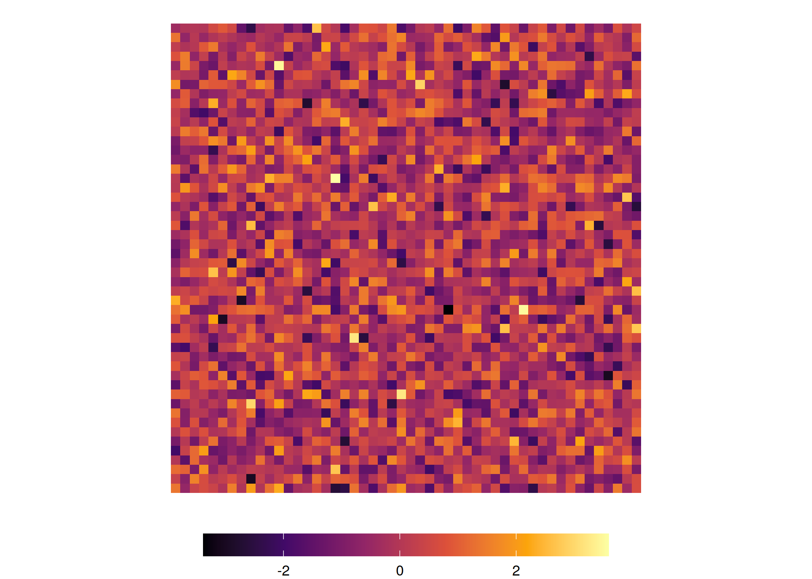
(a) Estatística Clássica: Sem dependência espacial (i.i.d.)
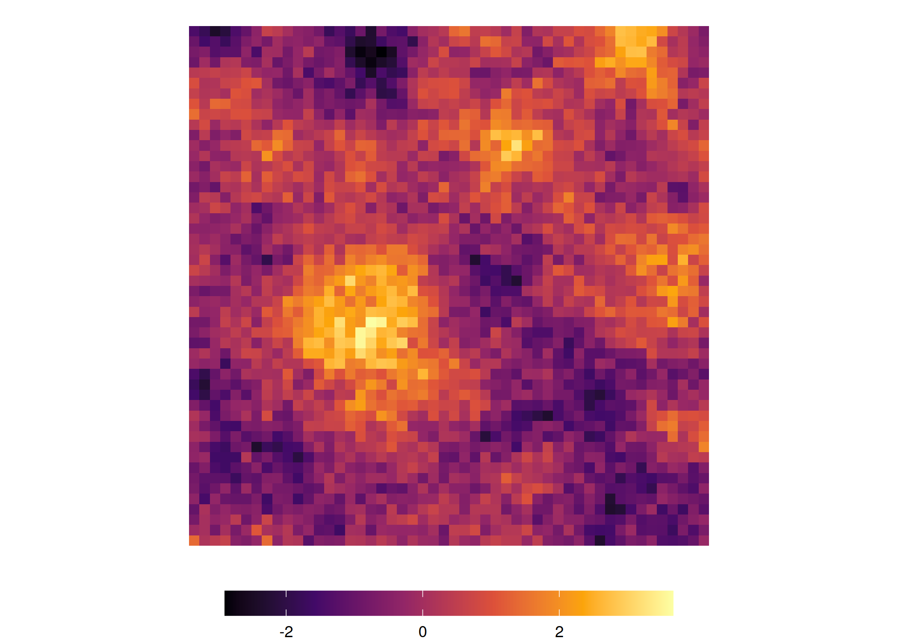
(b) Estatística Espacial: Existe dependência espacial
Figura 2.1: Comparação Visual entre Processos Estocásticos
Autocorrelação espacial
Enquanto a dependência espacial constitui a propriedade teórica intrínseca ao processo gerador dos dados, a autocorrelação espacial é a medida estatística utilizada para quantificá-la. O termo distingue-se fundamentalmente da correlação convencional, como a de Pearson, que avalia a associação linear entre duas variáveis distintas (\(X\) e \(Y\)). A autocorrelação espacial, por sua vez, examina a correlação de uma única variável consigo mesma, porém deslocada no espaço geográfico, confrontando o valor da variável no local \(s_i\) com os valores observados na sua vizinhança \(s_j\). Segundo Chun e Griffith (2017), essa métrica quantifica simultaneamente a força e a direção da relação espacial, servindo como um diagnóstico crucial para a validade das análises subsequentes. A sua identificação não é apenas descritiva, mas um pré-requisito metodológico, uma vez que Getis (1999) alerta que ignorar essa estrutura e aplicar métodos clássicos, como os Mínimos Quadrados Ordinários (MQO), viola o pressuposto de independência dos erros, resultando em estimativas de variância enviesadas e testes de hipótese inválidos.
A autocorrelação espacial manifesta-se em três padrões estruturais distintos, visualizados na Figura 2.2. A configuração mais frequente em fenômenos naturais e sociais é a autocorrelação espacial positiva, que ocorre quando valores similares tendem a se agrupar no espaço, formando clusters. Neste cenário, observa-se que locais com valores altos são vizinhos de outros valores altos, e locais com valores baixos são vizinhos de outros valores baixos, indicando processos de continuidade ou contágio, comuns em variáveis como temperatura, altitude ou preços imobiliários. Em contraste, a autocorrelação espacial negativa caracteriza-se pela adjacência de valores dissimilares, onde um local com valor alto tende a ser cercado por vizinhos com valores baixos, e vice-versa. Este padrão, visualmente semelhante a um tabuleiro de xadrez, é menos frequente na natureza e geralmente sinaliza processos de competição ou inibição espacial, como a localização de estabelecimentos comerciais concorrentes. Por fim, a ausência de autocorrelação denota uma distribuição puramente estocástica (completa aleatoriedade espacial) dos valores no espaço, onde o valor observado em um ponto não fornece informação estatística sobre seus vizinhos, representando a independência espacial e constituindo a hipótese nula (\(H_0\)) na maioria dos testes estatísticos espaciais.
Para operacionalizar a mensuração da dependência e o cálculo da autocorrelação, torna-se imperativo definir formalmente a estrutura de conectividade entre as unidades espaciais, estabelecendo o conceito de vizinhança. Conforme definem Chun e Griffith (2017), a quantificação da dependência exige a identificação precisa de um conjunto de valores vizinhos que covariam com a observação de interesse, sendo essa relação estruturada algebricamente através de uma Matriz de Pesos Espaciais (\(\mathbf{W}\)). Tradicionalmente, essa matriz é construída sob critérios de contiguidade física, utilizando analogias do xadrez para dados de área: o critério Torre (Rook) estipula que as unidades são vizinhas apenas se compartilharem uma fronteira física (arestas), enquanto o critério Rainha (Queen) considera vizinhas as unidades que compartilham qualquer ponto (arestas ou vértices). Alternativamente, especialmente em geoestatística, a vizinhança é definida por funções de distância, onde todas as unidades dentro de um raio \(d\) são consideradas conectadas, ou onde a magnitude da influência decai inversamente à distância euclidiana entre os centróides Figura 2.3.
Entretanto, a definição de “espaço” na modelagem contemporânea expandiu-se para além da geografia física. Econometristas e teóricos regionais, como Kelejian e Piras (2017), argumentam que a distância não deve se limitar à métrica euclidiana, mas sim representar o enfraquecimento das conexões entre unidades observacionais em múltiplas dimensões. Nesta perspectiva, a matriz \(\mathbf{W}\) deve ser capaz de capturar a “distância econômica” ou institucional, permitindo que a vizinhança seja definida por semelhanças em estruturas de mercado, alinhamento político ou hierarquia urbana. Sob essa ótica, metrópoles fisicamente distantes (como São Paulo e Nova York) podem ser consideradas vizinhas devido aos fluxos financeiros e competição econômica direta, enquanto municípios contíguos de menor porte podem apresentar uma interação estatística negligenciável.
A crítica à primazia exclusiva da proximidade física é aprofundada pela geografia econômica evolucionária. Boschma (2005) defende que a proximidade geográfica não é condição necessária nem suficiente para a interação e o aprendizado, atuando, no máximo, como uma facilitadora para outras formas de conexão. Para que ocorra o efetivo transbordamento de conhecimento (spillovers), a “vizinhança” real deve ser compreendida através de outras quatro dimensões de proximidade: a cognitiva, que envolve uma base de conhecimento compartilhada; a organizacional, referente à capacidade de controle e coordenação; a social, baseada em relações de confiança e parentesco; e a institucional, que diz respeito a normas e legislações comuns. Portanto, uma definição robusta de vizinhança em modelos espaciais modernos deve reconhecer que a interação entre agentes é frequentemente moldada pela afinidade socioeconômica e institucional, transcendendo a simples adjacência física.
Código
if (!require("pacman")) install.packages("pacman")pacman::p_load(ggplot2, patchwork)plot_neighbors <-function(type) {# Grid 3x3 df <-expand.grid(x =1:3, y =1:3)# Definir o centro center <- df$x ==2& df$y ==2# Definir vizinhosif (type =="Torre (Rook)") { neighbors <- (abs(df$x -2) +abs(df$y -2)) ==1 } elseif (type =="Rainha (Queen)") { neighbors <- (abs(df$x -2) <=1&abs(df$y -2) <=1) &!center } df$legenda <-"Outros" df$legenda[neighbors] <-"Vizinho" df$legenda[center] <-"Local de interesse" df$legenda <-factor(df$legenda, levels =c("Local de interesse", "Vizinho", "Outros"))# Plotggplot(df, aes(x, y, fill = legenda)) +geom_tile(color ="black", lwd =1) +scale_fill_manual(values =c("Local de interesse"="darkred", "Vizinho"="steelblue", "Outros"="white")) +coord_fixed() +theme_void() +labs(title = type, fill ="") +theme(legend.position ="bottom", plot.title =element_text(hjust =0.5))}#p1 <-plot_neighbors("Torre (Rook)")p2 <-plot_neighbors("Rainha (Queen)")#p1 ; p2
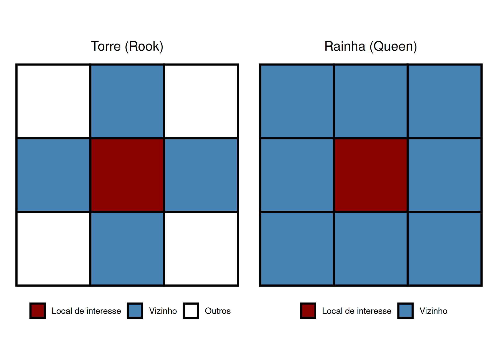
(a) Torre (Rook)
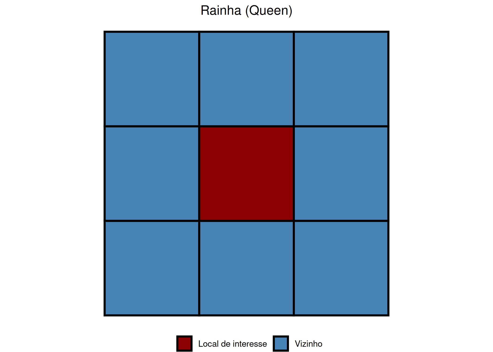
(b) Rainha (Queen)
Figura 2.3: Critérios de Vizinhança por Contiguidade.
Heterogeneidade espacial
A Heterogeneidade Espacial é definida fundamentalmente como a complexidade e a variabilidade de uma propriedade de um sistema no espaço e no tempo (Li e Reynolds 1994). No âmbito da estatística espacial, ela transcende a simples variação dos dados brutos e representa uma característica intrínseca do Processo Gerador de Dados (Data Generation Process), o qual se mostra inconsistente ou instável ao longo do domínio geográfico (Peng e Inoue 2024). É crucial distinguir este conceito da dependência espacial: enquanto a dependência foca na força da conexão/interação ou autocorrelação entre vizinhos (o quanto se influenciam), a heterogeneidade foca na variação da estrutura do fenômeno (o como se relacionam), implicando que os parâmetros estatísticos (como médias, variância, e coeficientes dos modelos, etc.) não são constantes em toda a área de estudo Figura 2.4.
Sob uma ótica estatística, a presença de heterogeneidade implica frequentemente na violação da suposição de estacionariedade. Segundo Wagner e Fortin (2005), ela deve ser compreendida como a variabilidade espacialmente estruturada de uma propriedade de interesse, significando que parâmetros estatísticos fundamentais como a média, a variância ou a estrutura de covariância não são constantes em toda a área de estudo. Isso distingue a heterogeneidade, frequentemente associada a fatores exógenos e não-estacionários, da autocorrelação espacial pura, que é comumente associada a processos endógenos estacionários.
Essa variabilidade estrutural manifesta-se simultaneamente de duas formas: como heterogeneidade contínua, onde as relações mudam gradualmente através do espaço (em gradientes globais ou locais), ou como heterogeneidade discreta, caracterizada por mudanças abruptas em fronteiras administrativas ou zonas geográficas específicas (Peng e Inoue 2024). Para dados categóricos, Li e Reynolds (1994) operacionalizam essa heterogeneidade como a complexidade na composição (número e proporção de tipos de manchas) e na configuração (arranjo espacial e forma). Na ecologia de paisagens, o conceito expande-se para descrever variações vitais para a dinâmica populacional, influenciando diretamente a persistência, extinção e coexistência de espécies, uma vez que a localização espacial determina a abundância e distribuição dos organismos.
A consequência prática da heterogeneidade é que o contexto local altera as “regras do jogo”. Na estatística clássica, assume-se um modelo global \(y = \alpha + \beta x+\varepsilon, \: y|x \sim FE(.)\), onde \(FE(.)\) é família exponencial, o coeficiente \(\beta\) (o efeito de \(x\) em \(y\)) é fixo e universal para todo o banco de dados. Na presença de heterogeneidade espacial, reconhecemos que este efeito é local. Considere um modelo hedônico (sugestão de leitura: (Fávero 2003)) prevendo o preço de imóveis (\(y\)) com base na área construída (\(x\)): em um bairro nobre, um metro quadrado adicional pode valorizar o imóvel em R$ 10.000 (um \(\beta\) alto), enquanto em uma área periférica sem infraestrutura, o mesmo metro quadrado adicional pode agregar apenas R$ 1.000 (um \(\beta\) baixo). Devido a essa inconsistência (não-estacionariedade do parâmetro), modelos globais tendem a produzir resultados enviesados (Peng e Inoue 2024).
Código
if (!require("pacman")) install.packages("pacman")pacman::p_load(ggplot2, viridis, sf)#df_het <-expand.grid(x =1:20, y =1:20)# Simular Heterogeneidade Contínuadf_het$beta_real <- (df_het$y /20) *2+ (df_het$x /20) # Simular Heterogeneidade Discreta (uma "zona" diferente no centro)centro <- (df_het$x -10)^2+ (df_het$y -10)^2<16df_het$beta_real[centro] <- df_het$beta_real[centro] +3ggplot(df_het, aes(x, y, fill = beta_real)) +geom_tile() +scale_fill_viridis_c(option ="turbo", name =expression(beta(s))) +coord_fixed() +theme_void() +labs(title ="",subtitle ="") +theme(plot.title =element_text(hjust =0.5))
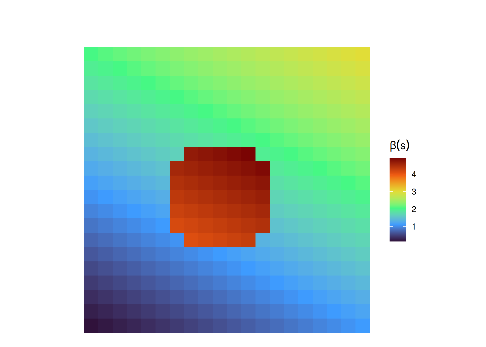
Figura 2.4: Heterogeneidade Espacial: O efeito de X em Y não é constante (\(\beta(s)\) muda gradualmente e abruptamente no centro)
2.3 Estacionariedade e Não Estacionariedade Espacial
Estacionariedade
A Estacionariedade é um conceito fundamental que sustenta a inferência estatística em processos estocásticos espaciais. Na maioria das investigações geocientíficas, deparamo-nos com um desafio intrínseco: possuímos apenas uma única realização (uma única “foto”) do processo estocástico sob investigação. Não podemos replicar o processo gerador e observar como o padrão de chuva ou a distribuição de minérios se formaria novamente sob as mesmas condições probabilísticas. Portanto, para calcularmos estatísticas vitais como a média e a variância, e realizarmos previsões (inferência), precisamos assumir algum grau de estabilidade ou repetição nas propriedades do fenômeno através do espaço.
Intuitivamente, a estacionariedade espacial sugere que as propriedades estatísticas (momentos da distribuição) do fenômeno são uniformes em toda a região de estudo, permanecendo inalteradas sob translação da origem do sistema de coordenadas (Schmidt e O’Hagan 2003). Em termos práticos, isso significa que as “leis” que governam a variabilidade dos dados não mudam de um local para outro, permitindo que utilizemos dados de uma parte da região para estimar parâmetros válidos para outra parte.
Para formalizar este conceito, conforme detalhado por Sahu (2022), devemos decompor a estacionariedade em níveis hierárquicos baseados nos momentos da distribuição (média, variância e covariância):
Estacionariedade de Primeira Ordem
Um processo estocástico espacial \(Y(\mathbf{s})\) é classificado como estacionário de primeira ordem se o seu valor esperado (média) for constante em todo o domínio de estudo \(D\):
\[E[Y(\mathbf{s})] = \mu, \quad \forall \mathbf{s} \in D\] Isso implica que não existe uma tendência (trend) global ou deriva sistemática nos dados. Um mapa da média teórica desse processo seria “monocromático” ou plano, sem gradientes direcionais. É crucial distinguir a média do processo (o parâmetro populacional \(\mu\), que é constante) da realização observada (os valores \(y_i\), que variam). A estacionariedade de primeira ordem garante que as flutuações observadas ocorrem ao redor de um patamar fixo. Se a média do processo altera-se em função da localização (por exemplo, a temperatura média diminuindo sistematicamente conforme a latitude aumenta), dizemos que o processo é não estacionário de primeira ordem. Matematicamente, isso é expresso como \(E[Y(\mathbf{s})] = \mu(\mathbf{s})\), indicando que a média é uma função determinística da posição \(\mathbf{s}\).
Estacionariedade de Segunda Ordem (Fraca)
Para a maioria das aplicações em geoestatística, como a Krigagem, a estabilidade apenas da média é insuficiente; necessitamos também que a estrutura de variabilidade e correlação seja estável. Um processo é dito estacionário de segunda ordem (ou fracamente estacionário) se satisfaz simultaneamente duas condições:
Possui média constante (atende à primeira ordem): \(E[Y(\mathbf{s})] = \mu\).
A covariância entre dois pontos (\(\{s_i,\: s_j\}_{j\neq i}\)) quaisquer depende exclusivamente do vetor de separação ou distância entre eles (\(\mathbf{h} = \mathbf{s_i} - \mathbf{s_j}\)), e não de suas localizações absolutas geográficas:
Esta propriedade é crítica pois permite estimar uma função de covariância global \(C(\mathbf{h})\) ou um variograma utilizando todos os pares de pontos disponíveis na amostra, simplificando drasticamente a modelagem ao reduzir o número de parâmetros necessários (Bandyopadhyay e Rao 2017). Além disso, ela implica na estacionariedade da variância (\(C(0) = \sigma^2\)), ou seja, a dispersão dos dados é constante em todo o domínio (homocedasticidade espacial).
NotaOutros Graus de Estacionariedade
Estacionariedade Estrita (Forte): Uma condição mais restritiva onde toda a distribuição conjunta de probabilidade permanece inalterada sob qualquer deslocamento espacial. Formalmente, para qualquer conjunto finito de \(n\) localizações \(\{s_1, s_2, \dots, s_n\}\) e qualquer vetor de deslocamento \(h\), a distribuição conjunta de probabilidade deve satisfazer:
Ou, de forma simplificada, a igualdade em distribuição: \[(Y(s_1), \dots, Y(s_n)) \stackrel{d}{=} (Y(s_1+h), \dots, Y(s_n+h))\] Em Processos Gaussianos (GP), como a distribuição é totalmente caracterizada pela média e covariância, a estacionariedade de segunda ordem implica automaticamente a estrita (Schmidt e O’Hagan 2003). isto é, como a distribuição Normal Multivariada (\(\mathcal{N}\)) depende exclusivamente dos dois primeiros momentos (\(\mu\) e \(\Sigma\)), se esses momentos forem invariantes por translação (estacionariedade de segunda ordem), a distribuição inteira também será (estacionariedade estrita). Não há parâmetros de ordem superior (como assimetria ou curtose) que possam variar.
Estacionariedade Intrínseca: Frequentemente usada no cálculo do Variograma, é menos restritiva que a de segunda ordem. Exige apenas que a média das diferenças seja zero e que a variância das diferenças entre observações dependa apenas da distância: \(Var(Y(s +h) - Y(\mathbf{s})) = 2\gamma(\mathbf{h})\).
Não Estacionariedade Espacial
Em contrapartida, a não estacionariedade espacial descreve a condição onde um modelo global único é incapaz de capturar a complexidade das relações, pois a própria natureza do processo se altera sobre o espaço (Brunsdon, Fotheringham, e Charlton 1996). Isso implica a violação das suposições de média ou covariância constantes descritas acima.
A não estacionariedade pode manifestar-se como uma tendência espacial na média (heterogeneidade de primeira ordem) ou como uma mudança na estrutura de dependência (heterogeneidade de segunda ordem), onde, por exemplo, o alcance da correlação espacial é curto em áreas urbanas, mas longo em áreas rurais (Dreesman e Tutz 2001). Ignorar essas heterogeneidades e forçar um modelo estacionário em dados não estacionários pode resultar em erros de estimativa sistemáticos, enviesamento de previsões e, em aplicações práticas, levar a decisões equivocadas (Bandyopadhyay e Rao 2017).
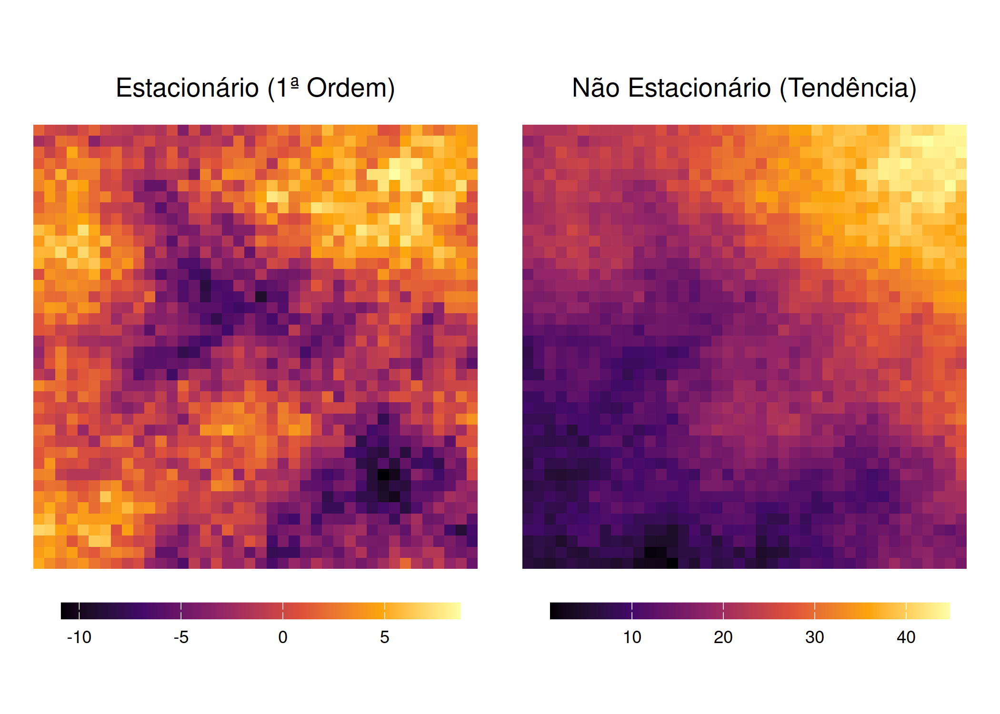
(a) Estacionário (1ª Ordem)
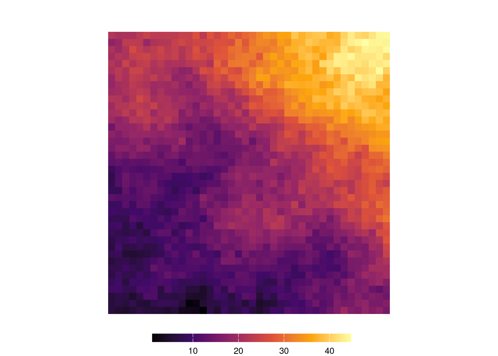
(b) Não estacionário (Tendência)
Figura 2.5: Processo Estacionário vs. Processo com Tendência (Não Estacionário na Média).
ImportanteConsequência prática na modelagem
A maioria dos métodos clássicos de geoestatística, como a Krigagem Simples ou Ordinária, assume implicitamente a estacionariedade dos dados. Se a análise exploratória revelar um padrão semelhante a Figura 2.5 da direita (Não Estacionário), a aplicação direta desses métodos será inválida. Nestes casos, o analista deve optar por:
Remover a tendência (detrending) modelando-a com uma superfície polinomial e analisando apenas os resíduos; ou
Utilizar métodos que incorporem a tendência explicitamente, como a Krigagem Universal ou modelos de regressão geograficamente ponderada.
O mapa como ferramenta analítica (e não decorativa)
A transição do mapa de um artefato meramente ilustrativo para um instrumento analítico robusto demanda uma reorientação metodológica fundamental na ciência de dados espaciais. Frequentemente, o mapa é tratado como o estágio final da pesquisa — uma imagem estática destinada apenas a validar resultados já obtidos ou indicar a localização de um evento. No entanto, uma abordagem estatística rigorosa reposiciona o mapa não como um fim, mas como um meio dinâmico de inquirição. Segundo Waller (2024), mapas servem para localizar números que, por sua vez, necessitam de mapas para transformar a simples incidência de dados em ideias sobre causalidade. Essa perspectiva insere a cartografia no que o autor descreve como o “vórtice rodopiante da análise” (whirling vortex of analysis, vortex), um ciclo contínuo onde a visualização espacial motiva as perguntas iniciais, define a coleta de dados necessária e expõe as limitações dos métodos estatísticos disponíveis.
Para exercer essa função diagnóstica, o analista deve interrogar o mapa em busca de padrões estruturais específicos, nomeadamente: tendências, verificando a existência de gradientes direcionais (ex: o Leste é sistematicamente mais rico que o Oeste?); clusters/agrupamentos, identificando a presença de ilhas de valores altos ou baixos (pontos quentes/frios); e outliers/valores atípicos espaciais, detectando observações que desafiam a lógica do seu entorno, como uma ilha de riqueza cercada por um mar de pobreza. Contudo, para que essa leitura seja válida, a construção do mapa deve obedecer a regras estritas de semiologia gráfica. Loonis e Bellefon (2018) alerta que a escolha incorreta da variável visual pode enviesar completamente a interpretação. Um erro clássico e grave é a representação de dados absolutos (volumes, como população total ou PIB) através de mapas coropléticos (áreas coloridas). Isso gera uma distorção perceptiva onde unidades geográficas fisicamente extensas, mas pouco povoadas, dominam visualmente o mapa, sugerindo uma importância que não possuem. A prática analítica correta exige o uso de símbolos proporcionais (círculos ou quadrados) para volumes, reservando o uso de cores (mapas coropléticos) exclusivamente para variáveis normalizadas, como taxas, densidades ou proporções.
Além da escolha do tipo de mapa, a eficácia analítica reside na capacidade do pesquisador em manipular conscientemente a distorção da realidade. Monmonier (2005) argumenta que a generalização cartográfica não é uma falha, mas uma necessidade; um mapa que tentasse contar “toda a verdade” na escala 1:1 resultaria em uma exibição confusa e inútil. O ponto crítico dessa manipulação ocorre na discretização dos dados (definição dos intervalos de classe). A aceitação ingênua das classificações automáticas de software (default settings) pode mascarar tendências vitais ou criar padrões espúrios. A escolha entre métodos como quantis (que enfatizam a ordem relativa), intervalos iguais (que facilitam a leitura da legenda mas falham em dados assimétricos) ou quebras naturais de Jenks (que buscam minimizar a variância interna dos grupos) deve ser precedida por uma análise da distribuição dos dados (ex: usando histograma). Como demonstrado por Monmonier (2005), alterar o método de classificação é uma forma de análise exploratória que pode modificar drasticamente a percepção de correlações espaciais.
A utilidade do mapa como ferramenta científica depende de sua coerência interna e da confiança que ele inspira. Mocnik (2023) propõe que a legibilidade de um mapa deriva da coerência entre as afirmações que ele faz sobre o espaço, permitindo que diferentes observadores convirjam para uma interpretação comum. Em um ambiente saturado de informações, Prestby (2025) destaca que mapas são frequentemente usados como dispositivos retóricos de autoridade. Portanto, para transcender a simples “credibilidade” superficial e fomentar uma confiança duradoura, o mapa analítico deve ser transparente: ele não deve apresentar o território como uma ilha flutuando no vazio, mas incluir contexto vizinho, metadados detalhados e, crucialmente, a visualização explícita das incertezas inerentes ao processo de modelagem.
Figura 2.6: O Impacto da escolha visual do síndrome da morte súbita infantil (SIDS) na Carolina do Norte: 1974-78
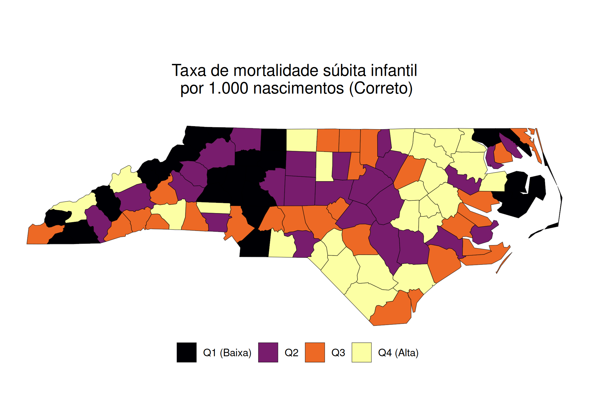
Figura 2.7: O Impacto da escolha visual do síndrome da morte súbita infantil (SIDS) na Carolina do Norte: 1974-78
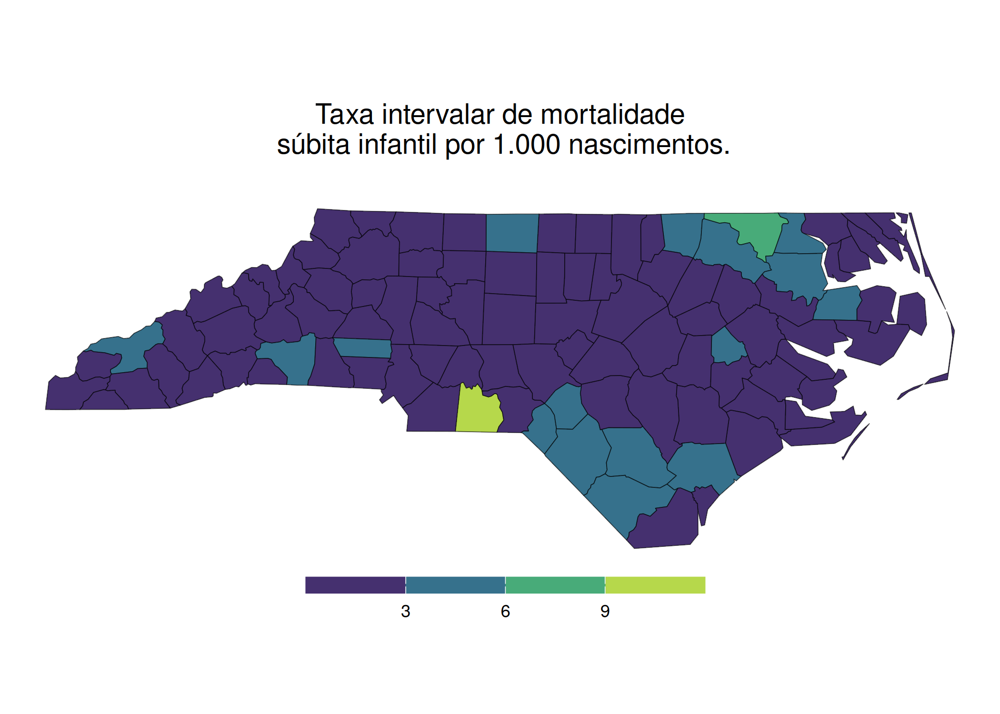
Figura 2.8: O Impacto da escolha visual do síndrome da morte súbita infantil (SIDS) na Carolina do Norte: 1974-78
Importante
A diferença entre um mapa decorativo e um mapa analítico reside na intenção e na transparência do processo de construção:
Decorativo: Busca a estética e a persuasão imediata, frequentemente ocultando a incerteza e aceitando classificações automáticas de software sem crítica.
Analítico: Busca a descoberta e a compreensão de processos. Ele utiliza a generalização como recurso metodológico consciente e estabelece a confiança através da explicitação das fontes, dos métodos de classificação escolhidos e das limitações dos dados.
2.4 O Espaço Geográfico
Na estatística espacial, a representação rigorosa do espaço é a base fundamental sobre a qual todas as análises subsequentes são construídas. Diferente da estatística clássica, onde as observações existem em um espaço abstrato, na estatística espacial a localização física \((x,y,z)\) e as relações métricas entre as observações são determinantes. Saber onde algo acontece é tão importante quanto saber o que aconteceu. Para determinar a localização de eventos, calcular distâncias entre vizinhos ou mensurar áreas com validade física e estatística, é imprescindível estabelecer superfícies de referência. A seguir, detalhamos os fundamentos geodésicos essenciais para evitar os erros mais comuns em análise espacial.
NotaDica de Estudo
Esta seção aborda conceitos fundamentais, porém densos. Se sentir dificuldade na primeira leitura, não desanime: a percepção espacial exige tempo e abstração. Recomendamos que, em caso de dúvida, você complemente o estudo com as referências sugeridas e explore vídeos explicativos no YouTube ou artigos no Google Scholar para ver esses conceitos aplicados na prática.
A forma da Terra: esfera, elipsoide e geoide
Como representamos a Terra matematicamente?
A primeira etapa para localizar um ponto no espaço é definir a superfície sobre a qual estamos trabalhando. Historicamente e computacionalmente, trabalhamos com três aproximações da forma da terra, cada uma com um propósito distinto na modelagem espacial.
Superfície topográfica (A terra real): É o chão onde pisamos e onde realizamos as medições. É irregular e rugosa. Matematicamente, é uma superfície complexa demais para realizar cálculos geométricos globais diretos, servindo apenas como objeto de medição, não de referência matemática Figura 2.9.
Geoide (A Terra da Física): Imagine que a Terra fosse coberta inteiramente por água, sem ventos ou marés, influenciada apenas pela gravidade. A forma que essa água tomaria é o Geoide. O Geoide é a superfície equipotencial do campo gravitacional que coincide com o Nível Médio do Mar em repouso e se estende continuamente sob os continentes (Iliffe 2000). Se os oceanos pudessem fluir livremente sob a terra através de canais, a superfície que a água formaria seria o Geoide. Fisicamente, ele define a “vertical” (direção da gravidade). Porém, como é ondulado (devido à distribuição desigual de massa da Terra), não serve como superfície de cálculo de coordenadas (latitude/longitude), mas é fundamental para definir a altitude ortométrica (onde a água flui) Figura 2.10.
Elipsoide de Revolução ((A Terra da Matemática): Devido à complexidade do Geoide, utiliza-se o Elipsoide de revolução, que é uma figura matemática suave gerada pela rotação de uma elipse ao redor do seu eixo menor. Ele não tem realidade física (você não sente o elipsoide), mas é a superfície de referência onde projetamos as coordenadas para fazer contas. A relação fundamental é \(h \approx H + N\) (Altitude Geométrica = Ortométrica + Ondulação Geoidal). O elipsoide é definido por dois parâmetros principais: o semi-eixo maior \(a\) e o semi-eixo menor \(b\)Figura 2.11. A partir destes, define-se o achatamento \(f\), que descreve o quanto a Terra se desvia de uma esfera perfeita, calculado pela fórmula \(f = (a - b)/a\). Ignorar este achatamento em escalas locais ou regionais pode introduzir erros significativos de posição (Iliffe 2000).
Figura 2.11: Elipsoide de Revolução, Fonte: Janssen (2009)
ImportanteSaiba mais
Recomenda-se aos interessados aprofundar o estudo deste tema através da leitura do livro Datums and Map Projections for remote sensing, GIS, and surveying(Iliffe 2000), bem como consultando os materiais práticos do blog do Professor Adenilson Giovanini.
2.5 Fundamentos de geodesia
A Geodesia é a ciência responsável por medir e representar a forma da Terra, sua orientação no espaço e seu campo gravitacional. Sua tarefa primordial é criar o arcabouço matemático que permite transformar a superfície física irregular da Terra em dados de coordenadas \(X, Y\) e \(Z\) processáveis por computadores (Vanicek e Krakiwsky 2015). Enquanto a topografia clássica operava separando o posicionamento horizontal do vertical devido às limitações dos instrumentos óticos, a geodesia moderna, impulsionada pela era espacial, opera num modelo tridimensional integrado. Isso significa que a posição de um ponto é definida por um vetor tridimensional com origem no centro de massa da Terra, unificando a geometria e a física do planeta para fornecer localizações precisas em qualquer lugar do globo.
Sistemas geodésicos e datum (horizontal e vertical)
Um elipsoide (Figura 2.11) é apenas uma forma geométrica. Para que ele sirva como sistema de coordenadas, precisamos “ancorá-lo” à Terra, e essa ancoragem é definida pelo Datum. O Datum define a posição do centro do elipsoide, sua orientação e escala em relação ao planeta. Existem dois tipos principais de Datum Horizontal (Janssen 2009).
Datum Topocêntrico (Local): O elipsoide é encaixado para servir bem a uma região (ex: SAD69 para o Brasil). Seu centro não coincide com o centro de massa da Terra, sendo posicionado e orientado para se ajustar perfeitamente a uma região específica, como um país ou continente.
Datum Geocêntrico (Global): O centro do elipsoide coincide com o centro de massa da Terra (ex: SIRGAS2000, WGS84). Este é o padrão obrigatório para uso com GNSS/GPS.
A distinção entre datums é crucial porque uma coordenada composta por latitude e longitude não é um local único e absoluto. Sem a especificação do Datum, esses valores numéricos são ambíguos. A mudança de um datum para outro, conhecida como Datum Shift, implica que as coordenadas numéricas de um mesmo ponto físico no chão se alteram. No Brasil (Link), a transição do SAD69 para o SIRGAS2000 implicou um deslocamento de aproximadamente 65 metros para as mesmas coordenadas geográficas. Além do horizontal, existe o Datum Vertical, que define a superfície de referência para a altitude zero, geralmente associada a um marégrafo específico que monitora o nível médio do mar localmente.
Sistema Geodésico Mundial (WGS84)
O Sistema Geodésico Mundial de 1984, conhecido como WGS84, é o sistema de referência padrão para o sistema GPS. Ele fornece um referencial globalmente consistente que permite que receptores em qualquer lugar do planeta calculem suas posições de forma compatível Leick, Rapoport, e Tatarnikov (2015). O WGS84 não é apenas um elipsoide, mas um sistema geodésico completo que inclui um modelo gravitacional da Terra e parâmetros angulares de rotação. Seus parâmetros definem o semi-eixo maior da Terra como exatamente \(6.378.137,0\) metros e um achatamento de aproximadamente \(1/298.257\)(Janssen 2009). Para a maioria das aplicações práticas em estatística espacial e geoprocessamento no Brasil, o WGS84 é considerado praticamente idêntico ao SIRGAS2000, o padrão oficial brasileiro, diferindo apenas na ordem de milímetros devido a atualizações temporais nas placas tectônicas.
Posicionamento global (GNSS: GPS, GLONASS, Galileo)
O termo GNSS (Global Navigation Satellite Systems) refere-se ao conjunto de constelações de satélites (um grupo de satélites similares que orbitam a Terra de forma sincronizada e otimizada) que permitem o posicionamento geoespacial autônomo, englobando o GPS americano, o GLONASS russo, o Galileo europeu e o BeiDou chinês. O funcionamento desses sistemas baseia-se no princípio da trilateração espacial. Um receptor GNSS mede o tempo \(t\) que um sinal de rádio leva para “viajar” do satélite até ele. Conhecendo a velocidade da luz \(c\), calcula-se a distância \(d\) através da equação \(d = c \cdot t\). Como o relógio do receptor não é perfeitamente sincronizado com os relógios atômicos dos satélites, o sistema precisa resolver um sistema de equações lineares com quatro incógnitas: as três coordenadas de posição \(X, Y, Z\) e o erro do relógio do receptor \(\delta t\). Portanto, são necessários sinais de no mínimo quatro satélites simultaneamente para que um receptor possa calcular uma posição tridimensional válida (Kaplan e Hegarty 2017).
Precisão, acurácia e fontes de erro
Na coleta de dados espaciais, é vital distinguir precisão de acurácia. A acurácia ou exatidão refere-se a quão próximo o valor medido está do valor verdadeiro no terreno, enquanto a precisão refere-se ao grau de repetibilidade da medida, ou seja, quão próximos os valores medidos estão uns dos outros em repetidas observações. Um conjunto de dados pode ser preciso (todos os pontos agrupados) mas não acurado (todos deslocados do local real e/ou que se deseja).
Várias fontes de erro afetam o posicionamento GNSS. Os efeitos atmosféricos são significativos, pois a ionosfera e a troposfera refratam o sinal de rádio, alterando sua velocidade e causando atrasos que o receptor interpreta erroneamente como distâncias maiores. O erro de multicaminho (multipath) ocorre quando o sinal reflete em superfícies como prédios, árvores ou o próprio solo antes de chegar à antena, aumentando o tempo de viagem e gerando “fantasmas” de localização, o que é crítico em ambientes urbanos. Além disso, a geometria dos satélites, medida pelo índice DOP (Dilution of Precision), influencia a qualidade da posição; se os satélites visíveis estiverem agrupados em uma pequena região do céu, a incerteza na trilateração aumenta drasticamente (Langley et al. 1999).
Coordenadas geográficas: latitude e longitude
Para descrever a posição de um ponto sobre a superfície curva do elipsoide, utilizamos coordenadas curvilíneas. A Latitude (\(\phi\)) é o ângulo medido no centro do elipsoide entre o plano equatorial e a linha normal (perpendicular) à superfície do elipsoide que passa pelo ponto de interesse, variando de \(-90^\circ\) no Polo Sul a \(+90^\circ\) no Polo Norte Figura 2.12 e Figura 2.13. A Longitude (\(\lambda\)) é o ângulo medido no plano equatorial entre o Meridiano de Greenwich, que serve como origem, e o meridiano que passa pelo ponto, variando de \(-180^\circ\) a Oeste a \(+180^\circ\) a Leste (Iliffe 2000).
A relação entre estas coordenadas angulares e a posição cartesiana tridimensional \((X, Y, Z)\) é dada por: \[
\begin{bmatrix} X \\ Y \\ Z \end{bmatrix} =
\begin{bmatrix}
(N + h) \cos \phi \cos \lambda \\
(N + h) \cos \phi \sin \lambda \\
[N(1-e^2) + h] \sin \phi
\end{bmatrix}
\] Onde \(N\) é o raio de curvatura da primeira vertical (Grande Normal) e \(e\) é a excentricidade do elipsoide (Iliffe 2000).
É fundamental notar a implicação prática disto nas distâncias: enquanto um grau de latitude tem comprimento linear quase constante (\(\approx 111\) km), a distância linear correspondente a um grau de longitude (\(d_{long}\)) varia com o cosseno da latitude: \(d_{long} \approx 111 \cdot \cos(\phi) \text{ km}\) Isso explica o estreitamento das distâncias, que vão de \(\approx 111\) km no Equador até zero nos polos.
Figura 2.13: Sinal de cada polo nas coordenadas geográficas, Fonte: Santa Isabel Tripod
Graus, minutos e segundos vs. coordenadas decimais
Tradicionalmente, as coordenadas geográficas são expressas no sistema sexagesimal de Graus, Minutos e Segundos (DMS). No entanto, para análise computacional e estatística em ambientes como R ou Python, é imperativo converter esses valores para Graus Decimais (DD). A fórmula de conversão é dada por
É crucial observar o sinal: se a direção for Sul (S) ou Oeste (W), o resultado final deve ser negativo, isto é, o sinal descrito na Eq. 2.3 deve ser negativo Figura 2.13.
Tomando como exemplo a latitude \(23^\circ 33' 15'' S\), termina por \(S\), logo a direção é Sul . Portanto, sabemos de antemão que o resultado numérico final deve ser negativo Figura 2.13. Assim, realizamos a soma das partes e multiplicamos o total por \(-1\) para posicionar corretamente a coordenada no globo:
A não realização dessa conversão ou o tratamento incorreto dos sinais é uma fonte comum de erros grosseiros em análises espaciais.
A conversão inversa, de Graus Decimais (\(DD\)) de volta para o sistema Sexagesimal (\(DMS\)), é igualmente importante para a comunicação de resultados. O procedimento matemático isola a parte inteira e fracionária sucessivamente. Primeiramente, o valor absoluto da coordenada decimal fornece os Graus inteiros (\(D = \lfloor |DD| \rfloor\)). A parte fracionária restante é multiplicada por 60 para obter os minutos decimais; a parte inteira deste resultado torna-se os Minutos (\(M\)). Por fim, a nova parte fracionária restante (dos minutos) é multiplicada novamente por 60 para obter os Segundos (\(S\)). O sinal original do valor decimal (\(+\) ou \(-\)) determina o hemisfério (Norte/Sul para latitude, Leste/Oeste para longitude).
Revertendo o valor \(-23,554167^\circ\) calculado anteriormente, obtemos:
Como o valor original (\(-23,554167^\circ\)) era negativo, combinamos o resultado calculado com a direção identificada no início, resultando em: \(23^\circ 33' 15'' S\).
AvisoAtenção na Manipulação de Coordenadas
Identificação dos Eixos: É fundamental identificar corretamente quais valores correspondem à Latitude (Y) e quais à Longitude (X) consultando a documentação dos dados. A inversão acidental dessas coordenadas altera drasticamente a localização geográfica no mapa, podendo posicionar o objeto em outro hemisfério ou invalidar a geometria (ex: Latitude \(> 90^\circ\)).
Precisão Numérica: Ao converter de Graus Decimais de volta para DMS, é comum encontrar resíduos numéricos (ex: \(14.9999''\) em vez de \(15''\)). Isso ocorre devido à aritmética de ponto flutuante (floating point arithmetic) dos computadores. Para visualização em mapas, recomenda-se arredondar os segundos para duas casas decimais, exceto em casos de geodésia de alta precisão.
Grid geográfico
O cruzamento de paralelos (linhas de latitude constante) e meridianos (linhas de longitude constante) forma o Grid Geográfico. Este sistema fornece uma localização absoluta e única para cada ponto na superfície terrestre, permitindo a referência universal. Contudo, para a estatística espacial, o grid geográfico curvo apresenta desafios significativos. Métodos analíticos como a estimativa de densidade de Kernel ou a função K de Ripley assumem distâncias euclidianas em um plano cartesiano isotrópico. Calcular essas distâncias diretamente sobre coordenadas angulares (graus) introduz distorções, pois a geometria do grid não é quadrada. Portanto, frequentemente é necessário projetar esse grid geográfico em um plano cartesiano através de um Sistema de Coordenadas Projetadas, processo que introduz distorções de área, forma ou distância, mas permite a aplicação correta da geometria euclidiana localmente.
Sistemas de Referência de Coordenadas (CRS)
Para manipular dados espaciais em um ambiente computacional e realizar cálculos de distância euclidiana, precisamos traduzir a Terra curva para uma superfície plana. O mecanismo que gerencia essa tradução e assegura a integridade espacial dos dados é o Sistema de Referência de Coordenadas, ou CRS (Coordinate Reference System).
Um CRS define matematicamente como as coordenadas bidimensionais projetadas (\(x, y\)) de um mapa se relacionam com localizações reais na superfície da Terra. Ele contém todas as informações necessárias para entender os números que compõem a geometria dos dados: o datum, o elipsoide de referência e, se aplicável, a projeção cartográfica utilizada(Snyder 1987).
Importante
A definição de um Sistema de Referência de Coordenadas (CRS) é indispensável para a análise espacial. Todo objeto espacial, seja um ponto, linha ou polígono, deve ter um CRS associado. Sem isso, essas formas são tratadas apenas como figuras geométricas em um plano abstrato, sem correspondência real com a superfície terrestre, o que impede a correta sobreposição de camadas (layers) e a integração de dados de fontes distintas.
Frequentemente, bases de dados apresentam unidades diferentes, como graus (sistemas geográficos) e metros (sistemas projetados, ex: UTM). Nessa situação, é imprescindível padronizar todas as camadas para um único sistema. Cabe ao analista escolher o CRS de referência e realizar a conversão (reprojeção) dos demais dados, decisão que deve considerar o objetivo da análise (ex: cálculos de distância ou área requerem sistemas projetados).
NotaA Relação entre Coordenadas Geográficas e Eixos Cartesianos
A associação correta entre coordenadas geográficas e os eixos do plano cartesiano frequentemente gera confusão devido a uma distinção sutil entre a representação visual das linhas e a direção de sua variação numérica. É fundamental compreender que, embora os meridianos (longitude) sejam desenhados como linhas verticais que conectam os polos, o valor da longitude varia deslocando-se no sentido Leste-Oeste; portanto, ela corresponde ao eixo horizontal (\(X\)). Inversamente, embora os paralelos (latitude) sejam visualizados como anéis horizontais, o valor da latitude altera-se ao mover-se no sentido Norte-Sul, definindo o posicionamento no eixo vertical (\(Y\)).
Essa lógica impõe uma atenção redobrada na estruturação dos dados, pois existe um conflito direto entre a convenção de fala e a formalização algorítmica. Enquanto na linguagem coloquial e na navegação convencionou-se dizer “Latitude e Longitude”, a matemática e a computação operam rigorosamente com pares ordenados na forma \((X, Y)\). Consequentemente, ao introduzir coordenadas em softwares estatísticos ou linguagens de programação, é imperativo inverter a ordem falada e adotar a ordem matemática: \((\text{Longitude}, \text{Latitude})\).
Sistemas geográficos vs. sistemas projetados
Existem dois tipos fundamentais de CRS. Os Sistemas de Coordenadas Geográficas (GCS) utilizam uma superfície tridimensional esférica ou elipsoidal para definir localizações. As unidades são angulares, geralmente graus decimais, e os exemplos mais comuns incluem o WGS84 e o SIRGAS2000. Estes sistemas são ideais para o armazenamento global de dados, mas não são adequados para cálculos diretos de distâncias ou áreas em duas dimensões. Já os Sistemas de Coordenadas Projetadas (PCS) utilizam uma superfície plana bidimensional. Eles são baseados em um GCS, mas aplicam uma transformação matemática (projeção) para “aplanar” a Terra. As unidades nestes sistemas são lineares, como metros ou pés, tornando-os a escolha correta para cálculos de área, distância e para a maioria das análises estatísticas espaciais. Exemplos incluem o sistema UTM e a projeção de Albers(Iliffe 2000).
DicaSaiba mais
Para um aprofundamento teórico, recomenda-se a leitura das seções 1 a 6 do livro Spatial Data Science With Applications in R, dos professores Edzer Pebesma e Roger Bivand. O material completo está disponível neste link.
Por que projetar a superfície da Terra
Embora vivamos em um globo, as telas de computador, os mapas impressos e a matemática da geometria euclidiana são planos. A projeção é necessária não apenas para a visualização, mas fundamentalmente para a análise. Muitos algoritmos de estatística espacial assumem um espaço isotrópico onde o Teorema de Pitágoras (\(h=\sqrt{\Delta x^2 + \Delta y^2}\)) é válido. Aplicar essa fórmula diretamente a coordenadas de latitude e longitude gera erros grosseiros e variáveis, uma vez que a distância representada por um grau de longitude diminui à medida que nos afastamos do Equador. Projetar os dados transforma a superfície curva em um plano métrico (\(X, Y\)) onde a geometria euclidiana funciona corretamente dentro de limites locais específicos (Iliffe 2000).
Tipos de distorção: área, forma, distância e direção
É matematicamente impossível aplanar uma superfície esférica sem distorcer alguma de suas propriedades geométricas. As projeções cartográficas são classificadas com base na propriedade que elas preservam, aceitando a distorção nas outras.
Projeções conformes preservam formas locais e ângulos, sendo úteis para navegação e topografia, mas distorcem drasticamente as áreas, fazendo regiões polares parecerem maiores do que são.
Projeções equivalentes ou Equal-Area preservam as proporções das áreas relativas, sendo essenciais para mapas coropléticos estatísticos e análises de densidade, embora distorçam as formas.
Projeções equidistantes preservam as distâncias a partir de um ou dois pontos específicos, mas distorcem formas e áreas em outros locais.
NotaProjeção
O analista deve escolher a projeção que minimiza a distorção na propriedade mais importante para sua análise específica.
Projeções cartográficas mais usadas em estatística espacial
Dentre as inúmeras projeções existentes, algumas assumem protagonismo na prática da análise espacial devido às suas propriedades geométricas específicas:
Sistema UTM (Universal Transversa de Mercator): Segmenta a Terra em 60 zonas (fusos) de 6 graus de longitude. Dentro de cada zona, a projeção é conforme (preserva ângulos) e as distorções lineares são mínimas, tornando-o o padrão para mapeamentos e análises em escalas local e regional.
Projeção Cônica de Albers (Albers Equal-Area): Frequentemente adotada para análises que cobrem vastas extensões territoriais, como países de dimensões continentais (ex: Brasil ou EUA). Por ser uma projeção equivalente, ela preserva a área real das feições, assegurando que cálculos de densidade e comparações visuais sejam rigorosamente justos.
Figura 2.15: Projeção Cônica de Albers, Fonte: Wikipedia
Mercator e Web Mercator: Embora onipresentes em mapas digitais (Google Maps, OpenStreetMap) devido à preservação de ângulos (útil para navegação), estas projeções distorcem severamente as áreas em direção aos polos. Portanto, são inadequadas para análises estatísticas que envolvam comparações de área, densidade global ou mapas coropléticos de grandes extensões.
Para gerenciar a complexidade de centenas de datums e projeções, padronizou-se internacionalmente o uso dos códigos do registro EPSG (European Petroleum Survey Group). Estes códigos numéricos curtos funcionam como identificadores para um CRS. Por exemplo:
EPSG:4326: Refere-se ao WGS84 geográfico (Lat/Lon), padrão do GPS.
EPSG:31983: Refere-se ao SIRGAS 2000 projetado na zona UTM 23S.
Nos bastidores, softwares de SIG e pacotes de estatística espacial utilizam pacotes como o PROJ para realizar as transformações matemáticas entre esses sistemas. Já as definições completas descrevendo detalhadamente o datum, o elipsoide, a projeção e os parâmetros de transformação são armazenadas em cadeias de texto padronizadas chamadas WKT (Well-Known Text).
DicaComo descobrir o EPSG
Para identificar o código correto de uma região, recomenda-se o uso do repositório epsg.io.
Ao acessar o site, você pode inserir a latitude e longitude ou utilizar a opção “Get position on a map”. Ao clicar na área de interesse no mapa, o site lista os zonas UTM e os códigos EPSG vigentes para aquela localização.
Uma distinção técnica crítica que frequentemente causa erros é a diferença entre atribuir e transformar um CRS. Atribuir um CRS significa apenas dizer ao software qual é o sistema de coordenadas dos dados, alterando o rótulo sem modificar os valores numéricos das coordenadas. Isso deve ser feito apenas quando os dados não possuem uma definição de CRS associada mas se sabe qual deveria ser. Transformar ou reprojetar um CRS envolve a aplicação de fórmulas matemáticas para converter as coordenadas de um sistema para outro, alterando os valores numéricos de (\(x, y\)) para corresponder à nova referência. Atribuir um CRS incorreto e depois tentar transformar resulta em dados posicionados erroneamente no espaço.
ImportanteTodos mapas estão errados
Assista ao vídeo do canal Ciência Todo Dia, clicando neste Link. Recomendo também o material produzido pela Vox, que é mais detalhado e possui visualização dinâmica, acessível por este Link
Para transformar a infinita complexidade do mundo real em um ambiente computacional finito e passível de análise estatística, precisamos de modelos de abstração. Na Ciência da Informação Geográfica, existem duas visões fundamentais e dicotômicas sobre como modelar a realidade: a visão baseada em Objetos (Modelo Vetorial) e a visão baseada em Campos (Modelo Matricial/Raster) (Pebesma 2018).
A escolha entre um e outro não é meramente técnica, mas ontológica: ela depende de como percebemos o fenômeno estudado. Uma casa é um objeto discreto (tem borda definida), enquanto a temperatura do ar é um campo contínuo (existe em toda parte e varia suavemente).
Geometria e atributos
Na geoinformática moderna, a unidade fundamental de análise vetorial é a Feição Simples Feição Simples (Simple Feature). Este conceito, padronizado internacionalmente pela ISO 19125, e descrito em Pebesma (2018) define que um objeto espacial é composto pela indissociabilidade entre sua forma e seus dados:
Geometria (Onde): É a descrição matemática da forma espacial e da localização absoluta do objeto no sistema de coordenadas.
Atributos (O quê/Quanto): São as variáveis estatísticas (como população, temperatura ou nome) associadas a essa geometria, organizadas em estruturas tabulares onde cada linha corresponde a uma geometria.
A arquitetura definida pela Open Geospatial Consortium (OGC) estipula que uma geometria é simples quando sua representação é bidimensional e a interpolação entre seus vértices é estritamente linear (linhas retas), excluindo curvas matemáticas complexas como splines para maximizar a eficiência computacional (Cox 2011).
Modelo vetorial
O modelo vetorial representa a geografia através de coordenadas explícitas que definem vértices e arestas. A Cox (2011) estabelece uma hierarquia de classes geométricas que derivam de uma classe raiz abstrata GeometryFigura 2.17.
Pontos (POINT): é a entidade geométrica elementar de dimensão zero (0-D). Definidos por uma única coordenada (x,y) ou, em sistemas geográficos, (Longitude, Latitude). Representam eventos onde a localização exata importa, mas a extensão física é irrelevante na escala do mapa (ex: localização de um crime, uma árvore, um poço).
Código
if (!require("pacman")) install.packages("pacman")pacman::p_load(sf, ggplot2, patchwork)#Pontoponto <-st_point(c(2, 2))df_ponto <-st_sf(geometry =st_sfc(ponto), id =1, tipo ="Ponto")print(df_ponto)
Simple feature collection with 1 feature and 2 fields
Geometry type: POINT
Dimension: XY
Bounding box: xmin: 2 ymin: 2 xmax: 2 ymax: 2
CRS: NA
id tipo geometry
1 1 Ponto POINT (2 2)
Linhas (LINESTRING): é uma geometria unidimensional (1-D) definida por uma sequência ordenada de dois ou mais pontos conectados por segmentos retos. Representam fluxos ou redes (ex: rios, estradas, trajetórias). Uma linha é considerada simples se ela não cruza a si mesma (não possui auto-interseção), exceto se o ponto final coincidir com o inicial, formando um anel fechado (LinearRing).
Código
#Linhalinha <-st_linestring(rbind(c(1, 1), c(3, 3), c(4, 1)))df_linha <-st_sf(geometry =st_sfc(linha), id =2, tipo ="Linha")print(df_linha)
Simple feature collection with 1 feature and 2 fields
Geometry type: LINESTRING
Dimension: XY
Bounding box: xmin: 1 ymin: 1 xmax: 4 ymax: 3
CRS: NA
id tipo geometry
1 2 Linha LINESTRING (1 1, 3 3, 4 1)
Polígonos (POLYGON)
O Polígono é uma superfície plana bidimensional (2-D) definida por um anel externo fechado (e opcionalmente anéis internos representando “buracos”). Representam áreas com limites definidos (ex: limites municipais, lagos, edifícios).
Código
#Polígonopoly_coords <-rbind(c(1, 1), c(1, 4), c(4, 4), c(4, 1), c(1, 1))poligono <-st_polygon(list(poly_coords))df_poly <-st_sf(geometry =st_sfc(poligono), id =3, tipo ="Polígono")print(df_poly)
Simple feature collection with 1 feature and 2 fields
Geometry type: POLYGON
Dimension: XY
Bounding box: xmin: 1 ymin: 1 xmax: 4 ymax: 4
CRS: NA
id tipo geometry
1 3 Polígono POLYGON ((1 1, 1 4, 4 4, 4 ...
NotaRegra da Mão Direita
Para garantir que cálculos de área em superfícies esféricas sejam inequívocos, normas modernas como o RFC 7946 (GeoJSON) impõem uma regra de orientação: o anel exterior deve ser desenhado no sentido anti-horário, enquanto os anéis interiores (buracos) devem seguir o sentido horário (Cox 2011).
Nem todo fenômeno geográfico é contínuo ou contíguo. Pense no Japão, na Indonésia ou, em menor escala, em um município que possui ilhas. Embora existam múltiplos polígonos desconexos fisicamente (as ilhas), eles constituem um único objeto lógico no banco de dados. Isso significa que, na tabela de atributos, haverá apenas uma linha (um registro) representando o “Japão”, mas a coluna de geometria conterá um MULTIPOLYGON com centenas de partes. Isso é fundamental para manter a consistência estatística (ex: o PIB é do país inteiro, não de cada ilha separadamente).
Geometrias com buracos
A topologia correta exige rigor na definição de áreas vazias. Um lago dentro de uma ilha, por exemplo, não deve ser modelado como um polígono de água desenhado sobre o polígono de terra. Topologicamente, o lago é uma ausência de área (um buraco) dentro da ilha.
Matematicamente, um Polígono é definido por:
Anel Exterior (Exterior Ring): Define a fronteira externa.
0 ou mais Anéis Interiores (Interior Rings): Definem os buracos. O cálculo da área geométrica é feito automaticamente subtraindo-se o interior do exterior.
Código
if (!require("pacman")) install.packages("pacman")pacman::p_load(sf, ggplot2, patchwork)#p1 <-rbind(c(0,0), c(2,0), c(2,2), c(0,2), c(0,0))p2 <-rbind(c(3,3), c(4,3), c(4,4), c(3,4), c(3,3))multi_poly <-st_multipolygon(list(list(p1), list(p2)))df_multi <-st_sf(geometry =st_sfc(multi_poly), id =1, nome ="País Arquipélago")print(df_multi)
Simple feature collection with 1 feature and 2 fields
Geometry type: MULTIPOLYGON
Dimension: XY
Bounding box: xmin: 0 ymin: 0 xmax: 4 ymax: 4
CRS: NA
id nome geometry
1 1 País Arquipélago MULTIPOLYGON (((0 0, 2 0, 2...
Código
#outer <-rbind(c(0,0), c(5,0), c(5,5), c(0,5), c(0,0))# hole <-rbind(c(1,1), c(1,4), c(4,4), c(4,1), c(1,1))poly_hole <-st_polygon(list(outer, hole))df_hole <-st_sf(geometry =st_sfc(poly_hole), id =1, nome ="Ilha com Lago")#g1 <-ggplot(df_multi) +geom_sf(fill ="orange", color ="black") +geom_sf_text(aes(label = id), nudge_y =0.5, color="white") +ggtitle("MULTIPOLYGON\n(1 Linha de dados, 2 Formas)") +theme_void() +theme(plot.title =element_text(hjust =0.5, size=11, face="bold"))g1
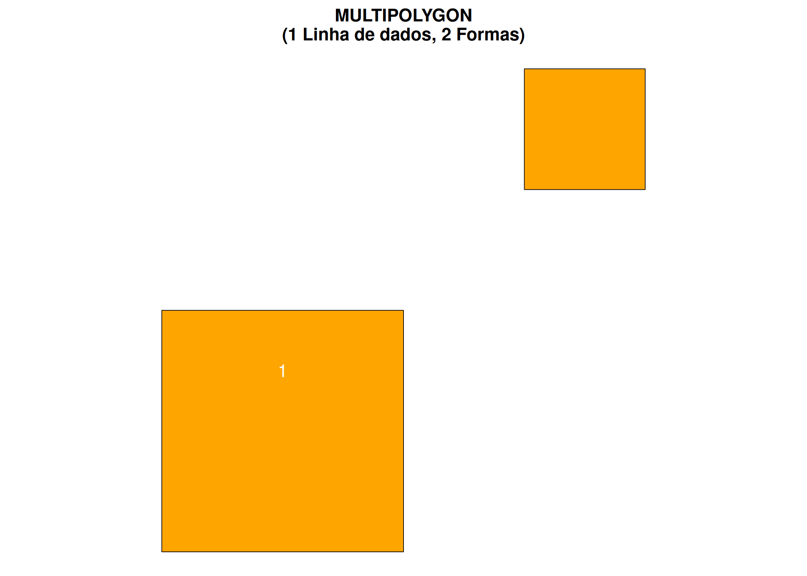
Figura 2.18: MULTIPOLYGON
Código
g2 <-ggplot(df_hole) +geom_sf(fill ="skyblue", color ="blue") +ggtitle("POLYGON com Buraco\n(O branco é 'vazio')") +theme_void() +theme(plot.title =element_text(hjust =0.5, size=11, face="bold"))print(df_hole);
Simple feature collection with 1 feature and 2 fields
Geometry type: POLYGON
Dimension: XY
Bounding box: xmin: 0 ymin: 0 xmax: 5 ymax: 5
CRS: NA
id nome geometry
1 1 Ilha com Lago POLYGON ((0 0, 5 0, 5 5, 0 ...
Código
g2
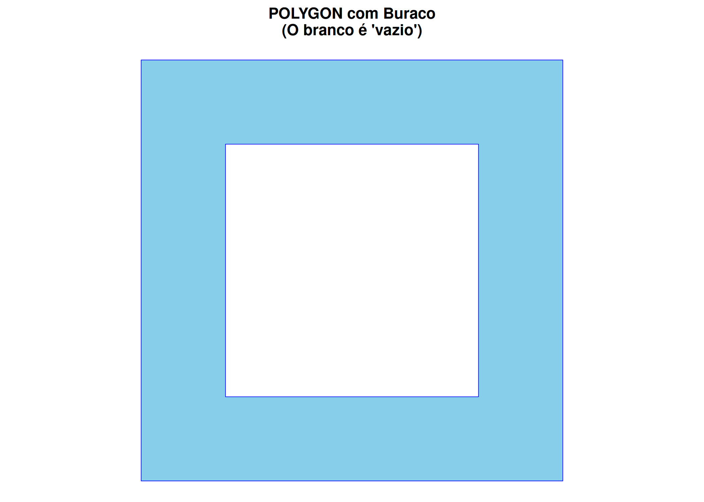
Figura 2.19: POLYGON
Modelo raster
O modelo raster abandona a noção de objetos discretos em favor de uma representação baseada em campo (field-based). O espaço é particionado em uma grade regular (matriz) de células, conhecidas como pixels Figura 2.20.
Pixels e Resolução
Pixels: Cada célula da grade armazena um valor numérico único. Ao contrário do vetor, onde o espaço vazio não consome memória, no raster o vazio deve ser preenchido (com valores NoData ou zero), cobrindo toda a extensão.
Resolução: É determinada pelo tamanho da célula no terreno (ex: 30m x 30m). Há um trade-off constante: resoluções mais finas capturam mais detalhes, mas aumentam quadraticamente o tamanho do arquivo e o custo de processamento.
Matrizes Espaciais: A geolocalização é implícita; baseia-se na posição da célula (linha/coluna) em relação a uma origem de coordenadas e ao tamanho do pixel, dispensando o armazenamento de coordenadas para cada ponto individualmente.
Superfícies contínuas e categóricas
Conte (2023) classifica a aplicação dos rasters em dois domínios:
Dados Contínuos: Representam variáveis que variam suavemente no espaço, como elevação (DEM), temperatura ou densidade populacional estimada. Os valores dos pixels são números reais (ponto flutuante).
Dados Categóricos: Representam classes discretas. Os pixels contêm números inteiros que funcionam como rótulos para uma tabela de atributos (ex: 1 = Floresta, 2 = Água, 3 = Urbano).
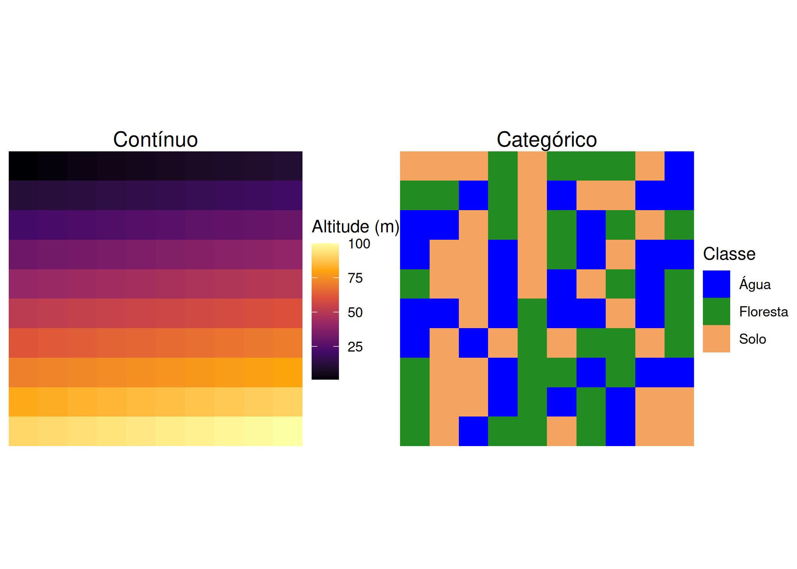
(a) Raster Contínuo (Gradiente de Elevação)
(b) Raster Categórico (Classes de Uso do Solo)
Figura 2.20: Tipos de dados raster
Formatos de dados espaciais
Para garantir a troca de informações entre diferentes softwares e usuários, utilizam-se padrões de arquivo específicos para cada modelo de dados.
Formatos vetoriais
Shapefile (.shp): Desenvolvido pela ESRI, é historicamente o formato mais ubíquo em SIG. No entanto, é tecnicamente obsoleto e possui limitações severas (tamanho máximo de 2GB, nomes de colunas limitados a 10 caracteres).
ImportanteAlerta sobre Shapefiles
Um erro extremamente comum é tratar o Shapefile como um arquivo único. Ele não é um arquivo único. O Shapefile é, na verdade, um pacote de arquivos que funcionam obrigatoriamente em conjunto. Para que o dado espacial funcione, você precisa ter, no mínimo, três arquivos na mesma pasta e com o mesmo nome:
.shp: Contém a geometria (o desenho do mapa).
.shx: Contém o índice posicional (para o software ler o desenho rápido).
.dbf: Contém a tabela de atributos (os dados estatísticos).
Ao enviar um shapefile por e-mail ou mover de pasta, você deve mover todos esses arquivos juntos (geralmente zipando-os). Se faltar um deles (especialmente o .shx ou .dbf), o arquivo corrompe e não abre.
GeoJSON (.json): Um formato baseado em texto (JSON) leve e legível por humanos. É o padrão da web moderna. A norma RFC 7946 impõe restrições estritas para garantir interoperabilidade: utiliza sempre o datum WGS 84 (coordenadas geográficas) e codificação de caracteres UTF-8.
GeoPackage (.gpkg): A alternativa moderna e aberta ao Shapefile. É um arquivo único (baseado em banco de dados SQLite) que não sofre das limitações de tamanho ou truncamento de nomes de colunas, suportando tanto vetores quanto rasters.
KML/KMZ: Formatos baseados em XML focados em visualização tridimensional no Google Earth, contendo informações de estilo e simbologia além dos dados.
Formatos raster
GeoTIFF (.tiff): O padrão da indústria para imagens de satélite e modelos de elevação. É um arquivo de imagem TIFF convencional que possui metadados geográficos (tags) embutidos no cabeçalho, permitindo que o software saiba exatamente onde a imagem se encaixa na Terra.
NetCDF (.nc): O formato Network Common Data Form é o padrão em oceanografia e climatologia. Sua estrutura multidimensional permite armazenar “cubos de dados” (latitude, longitude, tempo, altitude), sendo ideal para séries temporais de dados climáticos.
2.7 Tipos de dados espaciais
Conforme discutido anteriormente na seção Seção 2.1, a estatística espacial ocupa-se da análise de dados indexados espacialmente. Esta disciplina diverge da estatística clássica ao incorporar explicitamente a dependência espacial e distancia-se da análise espacial sensu stricto pelo tratamento formal da incerteza (Cressie e Moores 2022). Enquanto a análise espacial pode restringir-se a operações geométricas ou algorítmicas sobre informações geográficas, a estatística espacial fundamenta-se em um formalismo probabilístico, assumindo que a proximidade espacial implica maior dependência estatística entre observações (Tobler 1970).
A modelagem dessa dependência é sistematizada pela natureza do domínio espacial \(D\) onde o processo estocástico {\(Y(s) : s \in D \subset \mathbb{R}^d\)} ocorre. Cressie e Moores (2022) formalizam essa estrutura através de um modelo hierárquico de probabilidade conjunta, utilizando a notação de colchetes \([\cdot]\) para densidades:
\[[Y, D] = [Y | D] [D] \tag{2.5}\]
O componente \([D]\) modela a incerteza sobre onde as observações ocorrem (se as localizações são fixas ou aleatórias), enquanto \([Y∣D]\) descreve a variabilidade do atributo condicionada a essas posições. É a natureza desse conjunto \(D\), especificamente se ele é contínuo, discreto ou reticulado, que fundamenta a divisão clássica da estatística espacial em três categorias:
Geoestatística (\(Y(\mathbf{s}) : \mathbf {s} \in D^G \subset D\)): O domínio \(D^G\) é fixo e contínuo, permitindo que o atributo seja, teoricamente, observado em qualquer ponto. O objetivo principal é a predição em locais não amostrados (Chen, Genton, e Sun 2021; Nhancololo et al. 2024).
Dados de Área (\(Y(\mathbf{s}) : \mathbf{s} \in D^L \subset D\)): O domínio \(D^L\) é fixo, mas discreto e contável, consistindo em unidades geográficas agregadas (como municípios ou pixels) onde a dependência é definida por estruturas de vizinhança (Cressie e Moores 2022).
Processos Pontuais (\(Y(\mathbf{s}): \mathbf{s} \in D^P \subset D\)): O domínio \(D^P\) é aleatório, sendo a própria localização dos eventos a variável de interesse (Nhancololo 2024; Møller e Waagepetersen 2007).
Estes temas são aprofundados detalhadamente nos capítulos Capítulo 3 (Geoestatística), Capítulo 4 (Dados de Área) e Capítulo 5 (Processos Pontuais), respectivamente.
Quando estas estruturas incorporam a dimensão temporal, o processo é expandido para \(\{Y(\mathbf{s}, t) : \mathbf{s} \in D, t \in \mathcal{T}\}\), configurando os dados espaço-temporais (Chen, Genton, e Sun 2021). Ademais, em uma fronteira metodológica mais recente, os atributos podem ser tratados não como escalares, mas como funções completas análogo a séries temporais indexadas pelo espaço. Estes são os dados funcionais espaciais; caso incluam uma evolução dinâmica no tempo, denominam-se dados funcionais espaço-temporais. Embora estas extensões transcendam o escopo destas notas de aula, leitores interessados podem consultar contribuições fundamentais em Delicado et al. (2010), Moreno et al. (2023), Burbano-Moreno e Mayrink (2024), Mateu e Giraldo (2022), etc. Para os fundamentos teóricos da análise funcional per se, as obras de Ramsay e Silverman (2005) e Wang, Chiou, e Müller (2016) permanecem como referências.
AvisoO mesmo conjunto de dados
É fundamental compreender que a distinção entre Geoestatística, Dados de Área e Processos Pontuais refere-se à abordagem de modelagem escolhida para responder a uma pergunta científica, e não estritamente ao formato do arquivo de dados.
Um mesmo conjunto de dados original, como locais de ocorrência de crimes (pontos com coordenadas \(x,y\)), pode transitar entre as três categorias:
Como Processo Pontual se o objetivo é entender se a localização dos crimes é aleatória ou se agrupam (o foco está na coordenada \(\mathbf{s}\)).
Como Dados de Área se contarmos quantos crimes ocorreram dentro de cada bairro e relacionarmos isso com a renda média do bairro (o foco está na agregação em \(D^L\)).
Como Geoestatística se tratarmos a densidade de crimes como uma superfície contínua de risco e tentarmos interpolar esse risco para locais onde não houve medição (o foco está na predição em \(D^G\)).
Portanto, olhe para o seu problema e pergunte qual estrutura estocástica melhor representa o fenômeno que você deseja investigar.
Código
if (!require("pacman")) install.packages("pacman")pacman::p_load(sf, ggplot2, patchwork, dplyr, viridis, gstat, stars)#set.seed(42)cidade <-st_polygon(list(rbind(c(0,0), c(10,0), c(10,10), c(0,10), c(0,0)))) %>%st_sfc() %>%st_sf()n_pontos <-60pontos <-st_sample(cidade, size = n_pontos, type ="random") #pontos_sf <-st_sf(geometry = pontos) %>%mutate(x =st_coordinates(.)[,1], y =st_coordinates(.)[,2]) %>%filter(x <6| y >6) %>%mutate(z_valor = (x *2+ y *3) +rnorm(n(), 0, 5))#legenda_continua <-guides(fill =guide_colorbar(title =NULL,barwidth =unit(0.29, "npc"), barheight =unit(0.3, "cm"),label.position ="bottom"))#legenda_discreta <-guides(fill =guide_legend(title =NULL,label.position ="bottom",direction ="horizontal",keywidth =unit(.63, "cm"),keyheight =unit(.3, "cm"),nrow =1))#tema_base <-theme_void() +theme(legend.position ="bottom",plot.title =element_text(size=9, hjust =0.5),legend.margin =margin(t =0, r =0, b =0, l =0) )#g_pp <-ggplot(pontos_sf) +geom_sf(col ="red", size =2, alpha=0.7) +geom_sf(data = cidade, fill =NA, col ="black") + tema_base +ggtitle("Processo Pontual\n(O foco é a localização exata do evento)")# Dados de Área (Discreto)grid_area <-st_make_grid(cidade, n =c(4,4)) %>%st_sf()interseccao <-st_intersects(grid_area, pontos_sf)grid_area$contagem <-lengths(interseccao)g_area <-ggplot(grid_area) +geom_sf(aes(fill =factor(contagem)), col ="white") +scale_fill_viridis_d(option ="mako") +geom_sf(data=pontos_sf, size=0.5, col="red", alpha=0.3) + tema_base + legenda_discreta +ggtitle("Dados de Área\n(O foco é o nr de eventos por pixel)")# C. Geoestatística (Contínuo)grid_pred <-st_as_stars(st_bbox(cidade), dx =0.1, dy =0.1)invisible(capture.output(interpola <- gstat::idw(z_valor ~1, locations = pontos_sf, newdata = grid_pred, idp =2.0)))g_geo <-ggplot() +geom_stars(data = interpola, aes(fill = var1.pred)) +scale_fill_viridis_c(option ="inferno", na.value ="white") +geom_sf(data = cidade, fill =NA, col ="black") + tema_base + legenda_continua +ggtitle("Geoestatística\n(O foco é a predição dos\n eventos onde não existem)")g_pp ; g_area ; g_geo
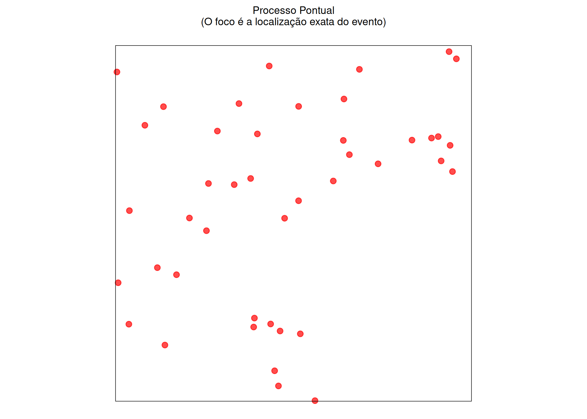
(a) Processo Pontual (O foco é a localização exata do evento)
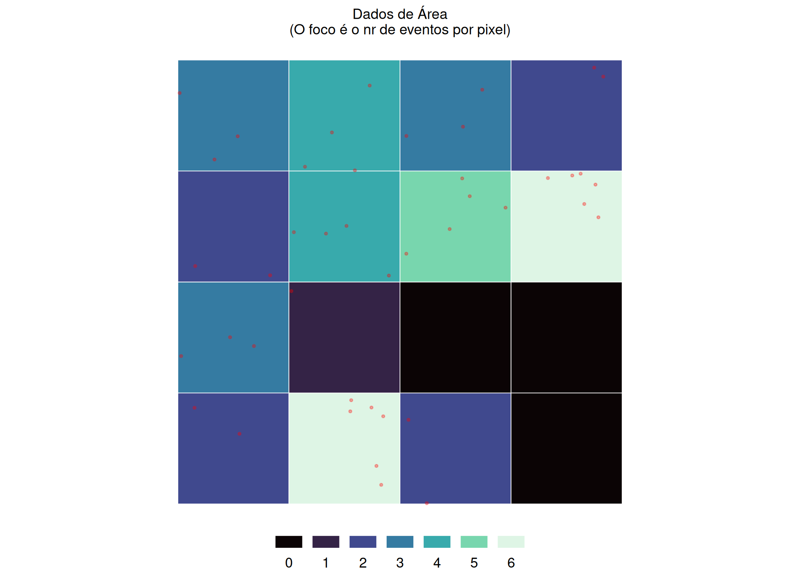
(b) Dados de Área (O foco é o nr de eventos por pixel)
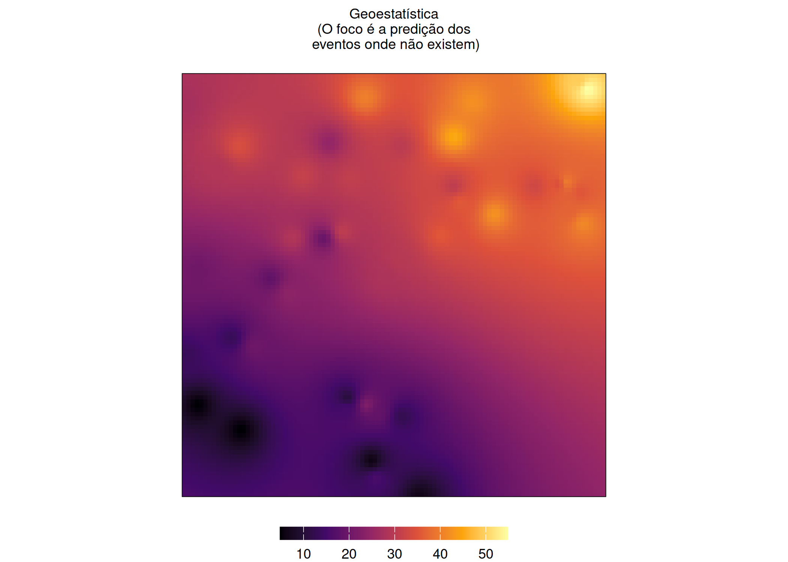
(c) Geoestatística (O foco é a predição dos eventos onde não existem)
Figura 2.21: O mesmo dado (pontos), três abordagens de modelagem.
2.8 Manuseamento de dados espaciais:
2.8.1 O pacote sf
O pacote sf (Simple Features for R) Pebesma (2018) representa o padrão moderno para a manipulação de dados espaciais no R. Desenvolvido pelo professor Edzer Pebesma, ele substituiu os antigos pacotes sp, rgdal e rgeos, unificando as funcionalidades de leitura, projeção e operações geométricas numa estrutura compatível com o Tidyverse.
O sf depende de bibliotecas externas de sistema (C++) poderosas: GDAL (leitura/escrita de arquivos), GEOS (geometria plana) e PROJ (projeções cartográficas). Ao instalar no R, ele compila ou baixa estas dependências.
A grande revolução do sf é tratar os dados espaciais como data frames (tabelas) comuns. Enquanto no antigo sp os dados eram objetos complexos e opacos, no sf a geometria é apenas uma coluna extra (geralmente chamada geometry ou geom) numa tabela de dados. Isso permite que utilizemos funções do pacote dplyr (select, filter, mutate) diretamente no mapa.
if (!require ("pacman")) install.packages("pacman")p_load(sf, tidyverse)
A estrutura é composta por três níveis hierárquicos:
sfg (Simple Feature Geometry): É a geometria de uma única feição (ex: um único polígono representando um lago).
sfc (Simple Feature Column): É uma lista que contém todas as geometrias (sfg) de todas as linhas da tabela, além de metadados cruciais como o sistema de coordenadas (CRS) e a caixa delimitadora (Bbox).
sf (Simple Feature): É a tabela completa, combinando a coluna sfc com os atributos (dados estatísticos como nome, população, etc.).
Criação de Geometrias (st_)
Podemos criar geometrias do zero usando coordenadas numéricas.
Para transformar essas geometrias soltas num objeto espacial analisável, agrupamo-las.
DicaQuando usar st_sfc vs. st_sf?
A distinção entre estas duas funções é fundamental para entender a estrutura do pacote:
Use st_sfc() (Simple Feature Column): Quando você tem a lista de geometrias e precisa definir o Sistema de Coordenadas (CRS). Pense nela como a função que cria a coluna geométrica. Ela não aceita dados estatísticos (nomes, valores), apenas formas e coordenadas.
Use st_sf() (Simple Feature): Quando você quer criar o objeto final para análise. Ela age como um data.frame ou tibble, colando a coluna geométrica (sfc) aos seus dados de atributos (IDs, Variáveis, etc.). É com este objeto que você fará gráficos e estatísticas.
Código
# Cria a COLUNA de geometria (sfc) # É aqui que definimos o CRS (ex: 4326 para GPS/WGS84)coluna_geo <-st_sfc(ponto, linha, poligono, crs =4326)#Cria o DATA FRAME espacial (sf) # Aqui unimos os dados (atributos) com a coluna criada acimameu_mapa <-st_sf(id =1:3,nome =c("Ponto A", "Estrada B", "Terreno C"),geometry = coluna_geo)print(meu_mapa)
Simple feature collection with 3 features and 2 fields
Geometry type: GEOMETRY
Dimension: XY
Bounding box: xmin: 1 ymin: 1 xmax: 4 ymax: 4
Geodetic CRS: WGS 84
id nome geometry
1 1 Ponto A POINT (2 2)
2 2 Estrada B LINESTRING (1 1, 3 3, 4 1)
3 3 Terreno C POLYGON ((1 1, 4 1, 4 4, 1 1))
Ao imprimir o objeto meu_mapa, o cabeçalho (header) fornece metadados vitais:
Geometry type: O tipo geométrico predominante.
Dimension: XY (2D).
Bbox: A caixa delimitadora (limites geográficos mínimos e máximos).
CRS: O Sistema de Referência de Coordenadas (EPSG: 4326).
Entrada e Saída (I/O)
O sf utiliza a biblioteca GDAL, permitindo ler e escrever dezenas de formatos de arquivos (Shapefile, GeoJSON, KML, GPKG, PostGIS, etc.).
Leitura (st_read e read_sf)
st_read(dsn, layer, ...): Função base R. Imprime um relatório detalhado sobre o ficheiro ao carregar.
read_sf(dsn, ...): Versão “tidy”. É silenciosa e retorna um objeto do tipo tibble (tabela moderna), facilitando a visualização no console.
Vamos carregar o mapa da Carolina do Norte (nc), incluído no pacote:
Código
p_load(tidyverse)# system.file encontra o caminho do ficheiro no seu computadorarquivo <-system.file("shape/nc.shp", package="sf")paste("O caminho do meu arquivo é:", arquivo)
[1] "O caminho do meu arquivo é: /home/almonha/R/x86_64-pc-linux-gnu-library/4.5/sf/shape/nc.shp"
Código
nc <-read_sf(arquivo) # Aqui vc poderia usar o caminho onde está seu arquivo, exemplo:# nc <- read_sf("/home/almonha/R/x86_64-pc-linux-gnu-library/4.5/sf/shape/nc.shp")# onde nc.shp é o ficheiro de interesseglimpse(nc) # Visualiza a estrutura
st_write(obj, "arquivo.ext", delete_layer = TRUE): Exporta o objeto. O argumento delete_layer permite sobrescrever arquivos existentes.
O formato é determinado automaticamente pela extensão do arquivo (.shp, .json, .gpkg).
Código
# Guardar como GeoPackagewrite_sf(nc, "mapa_final.gpkg")# Guardar como Shapefilewrite_sf(nc, "mapa_final.shp")
NotaOutas formas de salvar
Consulte Seção 1.8 para ver as outras formas/extensões de salvar
Sistemas de Coordenadas (CRS)
A gestão do CRS é a causa número um de erros em análise espacial. O sf oferece duas funções principais para lidar com isto.
Identificação (st_crs)
Consulta o sistema de coordenadas associado ao objeto. Retorna o código EPSG e a definição WKT.
Código
st_crs(nc) # Retorna "NAD27" (EPSG 4267)
Coordinate Reference System:
User input: NAD27
wkt:
GEOGCRS["NAD27",
DATUM["North American Datum 1927",
ELLIPSOID["Clarke 1866",6378206.4,294.978698213898,
LENGTHUNIT["metre",1]]],
PRIMEM["Greenwich",0,
ANGLEUNIT["degree",0.0174532925199433]],
CS[ellipsoidal,2],
AXIS["latitude",north,
ORDER[1],
ANGLEUNIT["degree",0.0174532925199433]],
AXIS["longitude",east,
ORDER[2],
ANGLEUNIT["degree",0.0174532925199433]],
ID["EPSG",4267]]
Transformação (st_transform)
Reprojeta (converte matematicamente) as coordenadas de um sistema para outro caso necessário.
Exemplo: O mapa nc está em NAD27 (unidade: graus/pés). Queremos calcular distâncias em metros. Devemos transformar para um sistema projetado, como UTM (Zona 17N - EPSG 32617).
Código
# Transformar para UTM (Metros)nc_utm <-st_transform(nc, crs =32617)st_crs(nc_utm)
Coordinate Reference System:
User input: EPSG:32617
wkt:
PROJCRS["WGS 84 / UTM zone 17N",
BASEGEOGCRS["WGS 84",
ENSEMBLE["World Geodetic System 1984 ensemble",
MEMBER["World Geodetic System 1984 (Transit)"],
MEMBER["World Geodetic System 1984 (G730)"],
MEMBER["World Geodetic System 1984 (G873)"],
MEMBER["World Geodetic System 1984 (G1150)"],
MEMBER["World Geodetic System 1984 (G1674)"],
MEMBER["World Geodetic System 1984 (G1762)"],
MEMBER["World Geodetic System 1984 (G2139)"],
ELLIPSOID["WGS 84",6378137,298.257223563,
LENGTHUNIT["metre",1]],
ENSEMBLEACCURACY[2.0]],
PRIMEM["Greenwich",0,
ANGLEUNIT["degree",0.0174532925199433]],
ID["EPSG",4326]],
CONVERSION["UTM zone 17N",
METHOD["Transverse Mercator",
ID["EPSG",9807]],
PARAMETER["Latitude of natural origin",0,
ANGLEUNIT["degree",0.0174532925199433],
ID["EPSG",8801]],
PARAMETER["Longitude of natural origin",-81,
ANGLEUNIT["degree",0.0174532925199433],
ID["EPSG",8802]],
PARAMETER["Scale factor at natural origin",0.9996,
SCALEUNIT["unity",1],
ID["EPSG",8805]],
PARAMETER["False easting",500000,
LENGTHUNIT["metre",1],
ID["EPSG",8806]],
PARAMETER["False northing",0,
LENGTHUNIT["metre",1],
ID["EPSG",8807]]],
CS[Cartesian,2],
AXIS["(E)",east,
ORDER[1],
LENGTHUNIT["metre",1]],
AXIS["(N)",north,
ORDER[2],
LENGTHUNIT["metre",1]],
USAGE[
SCOPE["Navigation and medium accuracy spatial referencing."],
AREA["Between 84°W and 78°W, northern hemisphere between equator and 84°N, onshore and offshore. Bahamas. Ecuador - north of equator. Canada - Nunavut; Ontario; Quebec. Cayman Islands. Colombia. Costa Rica. Cuba. Jamaica. Nicaragua. Panama. United States (USA)."],
BBOX[0,-84,84,-78]],
ID["EPSG",32617]]
Código
# Transformar para WGS84 (GPS - Lat/Long)nc_gps <-st_transform(nc, crs =4326)st_crs(nc_gps)
Coordinate Reference System:
User input: EPSG:4326
wkt:
GEOGCRS["WGS 84",
ENSEMBLE["World Geodetic System 1984 ensemble",
MEMBER["World Geodetic System 1984 (Transit)"],
MEMBER["World Geodetic System 1984 (G730)"],
MEMBER["World Geodetic System 1984 (G873)"],
MEMBER["World Geodetic System 1984 (G1150)"],
MEMBER["World Geodetic System 1984 (G1674)"],
MEMBER["World Geodetic System 1984 (G1762)"],
MEMBER["World Geodetic System 1984 (G2139)"],
ELLIPSOID["WGS 84",6378137,298.257223563,
LENGTHUNIT["metre",1]],
ENSEMBLEACCURACY[2.0]],
PRIMEM["Greenwich",0,
ANGLEUNIT["degree",0.0174532925199433]],
CS[ellipsoidal,2],
AXIS["geodetic latitude (Lat)",north,
ORDER[1],
ANGLEUNIT["degree",0.0174532925199433]],
AXIS["geodetic longitude (Lon)",east,
ORDER[2],
ANGLEUNIT["degree",0.0174532925199433]],
USAGE[
SCOPE["Horizontal component of 3D system."],
AREA["World."],
BBOX[-90,-180,90,180]],
ID["EPSG",4326]]
Importantest_crs vs st_transform
Use st_crs(x) <- valor apenas se os dados não tiverem CRS definido ou estiverem errados (isso apenas coloca um rótulo).
Use st_transform(x, valor) se os dados tiverem CRS e preterar-o (isso recalcula as coordenadas X e Y).
Confirmação Geométrica
Estas funções respondem a perguntas de Verdadeiro/Falso sobre a relação espacial entre duas geometrias (X e Y). Elas retornam, por padrão, uma matriz esparsa (lista de índices) indicando quais elementos de X se relacionam com quais de Y.
st_intersects(x, y): O mais comum. Retorna TRUE se X e Y partilham qualquer ponto no espaço (se tocam, cruzam ou sobrepõem).
st_disjoint(x, y): O oposto de intersects. Retorna TRUE se X e Y estão completamente separados.
st_contains(x, y): Retorna TRUE se nenhum ponto de Y está fora de X e pelo menos um ponto do interior de Y está dentro de X (Y está dentro de X).
st_within(x, y): O inverso de contains. X está dentro de Y.
st_touches(x, y): Retorna TRUE se as geometrias se tocam apenas na borda/fronteira, mas os seus interiores não se sobrepõem (ex: países vizinhos).
st_crosses(x, y): Retorna TRUE se as geometrias se cruzam (comum entre linhas ou linha/polígono), resultando numa geometria de dimensão inferior à máxima das duas.
st_overlaps(x, y): Retorna TRUE se duas geometrias da mesma dimensão partilham espaço, mas uma não contém a outra completamente.
st_equals(x, y): Retorna TRUE se as geometrias são topologicamente idênticas (mesma forma e localização), independente da ordem dos vértices.
Código
ponto_teste <-st_point(c(-81.5, 36.4)) |>st_sfc(crs =4267)#resultado <-st_intersects(nc, ponto_teste, sparse =FALSE)# Qual o nome do condado onde o ponto caiu?nc$NAME[resultado[,1]]
[1] "Ashe"
Operações Geométricas
Estas funções criam novas geometrias a partir de transformações nas existentes.
Unárias (Transformam uma geometria nela mesma)
st_buffer(x, dist): Cria um polígono que representa a zona de influência de raio dist ao redor da geometria. Fundamental para análises de proximidade.
st_centroid(x): Reduz a geometria ao seu centro de massa geométrico (ponto).
st_boundary(x): Extrai apenas a linha de fronteira (contorno) de um polígono.
st_convex_hull(x): Cria o menor polígono convexo que envolve todos os pontos da geometria (como um elástico esticado ao redor de pregos).
st_simplify(x, dTolerance): Reduz o número de vértices de linhas/polígonos complexos, mantendo a forma geral (algoritmo Douglas-Peucker). Útil para tornar mapas leves para web.
st_segmentize(x, dfMaxLength): Adiciona pontos a linhas longas para garantir que elas sigam a curvatura da terra ao serem reprojetadas.
Código
nc_utm <-st_transform(nc, 32617) #Transformar para metros (UTM)centroides <-st_centroid(nc_utm) #Calcular Centroidebuffers <-st_buffer(centroides, dist =10000) # Criar Buffer 10000 metrosggplot() +geom_sf(data = nc_utm, fill ="white") +geom_sf(data = centroides, fill ="black", alpha =0.3) +#adiciona o centro de cada poligonogeom_sf(data = buffers, fill ="red", alpha =0.3) +# Faz um Buffer 10000 metros ao redor de cada centrotheme_void()
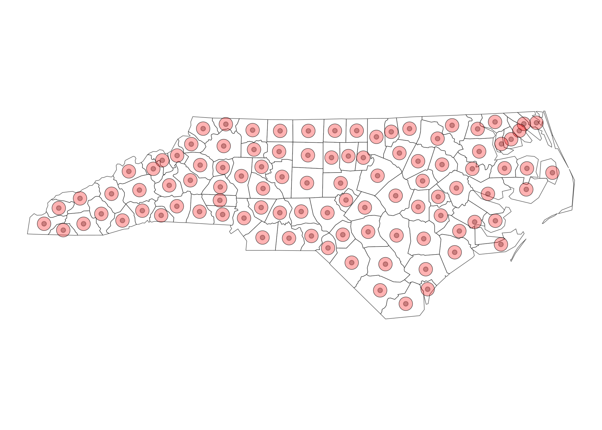
Binárias (Combinam duas geometrias)
Estas são operações de conjuntos:
st_intersection(x, y): Retorna a área comum entre X e Y. Preserva os atributos de ambos.
st_difference(x, y): Retorna a parte de X que não está em Y.
st_union(x, y): Quando fornecidos dois objetos, a função funde as duas camadas numa única, mantendo todas as geometrias (a soma de x e y).
st_union(x): Quando fornecido apenas um objeto, a função dissolve as fronteiras internas entre as polígonos adjacentes, agregando-os numa única geometria (Multi-Polígono).
st_sym_difference(x, y): (XOR) Retorna as áreas que estão em X ou em Y, mas não em ambos (o oposto da intersecção).
O sf permite usar a gramática do pacote dplyr para manipular a tabela de atributos sem perder a geometria (ver Seção 1.9).
filter(): Seleciona linhas (regiões) baseadas em critérios lógicos.
select(): Seleciona colunas. Nota: A coluna de geometria é “pegajosa” e permanece mesmo que não seja selecionada explicitamente.
mutate(): Cria novas colunas (ex: calcular densidade demográfica).
st_drop_geometry(): Remove a parte espacial e retorna um data.frame puro. Essencial para análises estatísticas convencionais ou exportação para Excel.
Junções Espaciais (st_join)
Esta é uma das funções mais poderosas do geoprocessamento no R. Enquanto o left_join (Seção 1.9) une duas tabelas baseando-se numa chave comum (como uma coluna de ID ou CPF), o st_join une duas tabelas baseando-se na localização espacial (geometria).
Sintaxe e Argumentos Principais
st_join(x, y, join = st_intersects, ..., left =TRUE, largest =FALSE)
x (Alvo): O objeto sf que receberá os dados. A geometria resultante será sempre a geometria de x.
y (Fonte): O objeto sf de onde vêm os novos atributos.
join: A regra geométrica a usar.
st_intersects (Padrão): Une se tocarem de qualquer forma.
st_within: Une apenas se x estiver totalmente dentro de y.
st_contains: Une apenas se x contiver y.
st_is_within_distance: Une se estiverem a uma certa distância (requer argumento dist).
left (Tipo de Junção):
TRUE (Padrão): Realiza um Left Join. Mantém todas as linhas de x. Se não houver correspondência espacial em y, as colunas novas vêm preenchidas com NA.
FALSE: Realiza um Inner Join```. Mantém apenas as linhas dexque realmente intersectam comy`, descartando o resto.
*suffix: Se houver colunas com nomes iguais em ambas as tabelas (ex: nome), define o sufixo para desambiguar (ex: nome.x, nome.y).
ImportanteAtenção à duplicação de registos
Diferente de um left_join tradicional onde esperamos uma relação 1:1, no espaço é comum haver sobreposições. Se um ponto x cair exatamente na fronteira entre dois polígonos y (ou numa área onde dois polígonos se sobrepõem), o st_join duplicará o ponto x. O resultado terá duas linhas para aquele ponto: uma com os dados do polígono A e outra com os dados do polígono B.
Sempre verifique o número de linhas (nrow) antes e depois do st_join. Se aumentou, houve duplicatas espaciais.
Junção por Distância (st_is_within_distance)
Às vezes, os objetos não se tocam, mas queremos unir pela proximidade (ex: atribuir a uma casa os dados da estação de metro num raio de 500m). Para isso, alteramos o argumento join e fornecemos a distância.
Simple feature collection with 5 features and 3 fields
Geometry type: POINT
Dimension: XY
Bounding box: xmin: 1.437888 ymin: 0.1366695 xmax: 4.702336 ymax: 2.677257
CRS: NA
id_arvore nome_parque gestor geometry
1 1 Parque A Prefeitura POINT (1.437888 0.1366695)
2 2 Parque B Estado POINT (3.941526 1.584316)
3 3 <NA> <NA> POINT (2.044885 2.677257)
4 4 <NA> <NA> POINT (4.415087 1.654305)
5 5 <NA> <NA> POINT (4.702336 1.369844)
Junção pelo Vizinho Mais Próximo
O st_join padrão não resolve a pergunta “Qual é a farmácia mais próxima desta casa?”, ele apenas resolve “Esta casa toca numa farmácia?”. Para encontrar o vizinho mais próximo (Nearest Neighbor) e trazer seus dados, usamos uma combinação especial:
# Une x ao y baseando-se em quem está mais perto (mesmo que longe)st_join(x, y, join = st_nearest_feature)
Visualização (ggplot2)
O sf fornece a geometria geom_sf(), que simplifica a cartografia no R.
Código
ggplot() +# Camada 1: Mapa basegeom_sf(data = nc, aes(fill = BIR74), color ="white", size=0.2) +# Escala de coresscale_fill_viridis_c(name ="Nascimentos (1974)") +# Camada 2: Centroidesgeom_sf(data =st_centroid(nc), size =1, color ="black") +# Controlo de Coordenadas e Zoomcoord_sf(datum =st_crs(4326)) +# Força grid em Lat/Longtheme_minimal() +labs(title ="Nascimentos na Carolina do Norte")
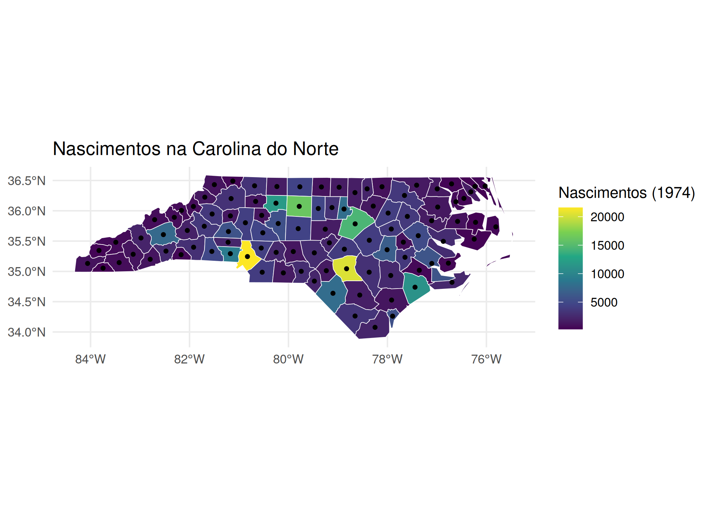
Outras Funções Úteis
st_bbox(x): Retorna a caixa delimitadora (xmin, ymin, xmax, ymax) do seu shapfile. Útil para definir limites de gráficos (xlim, ylim).
st_make_grid(x, cellsize): Cria uma grade retangular ou hexagonal cobrindo a área de X. Base para análises raster ou amostragem sistemática.
st_cast(x, to): Converte tipos de geometria.
Ex: st_cast(poligono, "LINESTRING") converte a borda do polígono em linha.
Ex: st_cast(multipoligono, "POLYGON") converte multiplos polígonos em polígonos individuais (aumenta o número de linhas).
st_make_valid(x): Corrige erros topológicos (ex: polígonos com laços, auto-intersecções) que frequentemente causam erros em operações como st_intersection.
Código
# Grid Hexagonal sobre a Carolina do Nortegrid_hex <-st_make_grid(nc, n =c(20, 20), square =FALSE) # square=FALSE faz hexágonosggplot() +geom_sf(data = nc, fill =NA, color ="blue") +geom_sf(data = grid_hex, fill =NA, color ="gray") +theme_void()
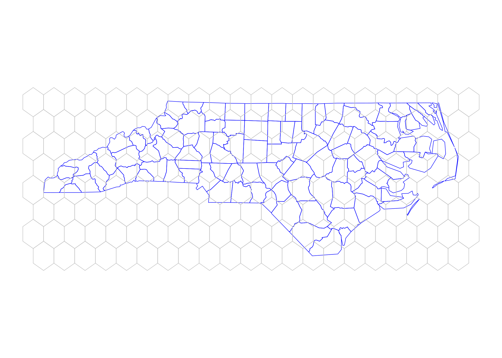
2.9 Pacote geobr
Enquanto o pacote sf fornece as ferramentas para manipular geometrias, o pacote geobrPereira e Goncalves (2024) fornece os dados. Desenvolvido por uma equipe liderada por pesquisadores do Ipea (Rafael H. M. Pereira), o geobr é a biblioteca mais robusta para baixar bases de dados espaciais oficiais do Brasil.
O seu grande diferencial é resolver os maiores problemas de quem trabalha com dados do IBGE:
Todos os dados são baixados já projetados no CRS oficial (SIRGAS 2000 - EPSG 4674).
Os dados vêm diretamente como objetos sf (Simple Features), prontos para análise no R.
Resolve automaticamente problemas de geometrias inválidas que frequentemente aparecem em shapefiles brutos baixados manualmente.
Permite baixar malhas territoriais de anos anteriores (ex: municípios como existiam em 1872, 1991, 2010, etc.), essencial para análises temporais consistentes.
Instalação e Carregamento
Código
if (!require("pacman")) install.packages("pacman")pacman::p_load(geobr, sf, ggplot2, dplyr)
Argumentos Comuns
year: Define o ano de referência da malha. Se omitido, geralmente baixa o último disponível. Ex: year = 2010 (Censo), year = 2020.
simplified: Um argumento lógico (TRUE ou FALSE):
TRUE (Padrão): Retorna uma geometria simplificada (menos vértices). É muito mais leve e rápido para carregar e plotar, ideal para visualização em mapas nacionais ou regionais. A simplificação usa o st_simplify preservando a topologia.
FALSE: Retorna a geometria original com resolução máxima. Obrigatório se você for fazer cálculos de precisão (áreas, perímetros) ou análises de fronteira muito detalhadas.
showProgress: Mostra a barra de progresso do download (TRUE/FALSE).
cache: Se TRUE (padrão), salva o arquivo numa pasta temporária do seu computador. Se você rodar o comando novamente na mesma sessão, ele lê do disco em vez de baixar da internet novamente, economizando tempo.
Divisões Administrativas
Estados (read_state)
Baixa a geometria das Unidades da Federação.
code_state: Pode ser o código numérico (ex: 33 para RJ), a sigla ("RJ") ou "all" para baixar o Brasil inteiro.
Código
p_load(geobr)# Ler todos os estados em 2010 (Ano de Censo)estados <-read_state(code_state ="all", year =2010, showProgress =FALSE)# Ler apenas São Paulo (código "SP")SP <-read_state(code_state ="SP", year =2010, showProgress =FALSE)ggplot() +geom_sf(data = estados, fill ="white", color ="gray50") +geom_sf(data = SP, fill ="orange", color ="black") +theme_minimal() +# vc pode trocar aqui pelo que desejalabs(title ="Mapa do Brasil com destaque para o São Paulo")
Recortes Regionais Específicos
O IBGE e outros órgãos definem regiões que não seguem necessariamente limites estaduais clássicos. O geobr facilita o acesso a esses recortes oficiais.
Semiárido Brasileiro (read_semiarid)
Esta função baixa a delimitação oficial do Semiárido Brasileiro. Este conjunto de dados é fundamental para estudos de seca, desenvolvimento regional e políticas públicas.
Código
semiarido <-read_semiarid(year =2017, showProgress =FALSE)ggplot() +geom_sf(data = estados, fill ="gray95", color ="gray") +geom_sf(data = semiarido, fill ="red", alpha =0.4, color =NA) +theme_void() +labs(title ="Delimitação Oficial do Semiárido (2017)")
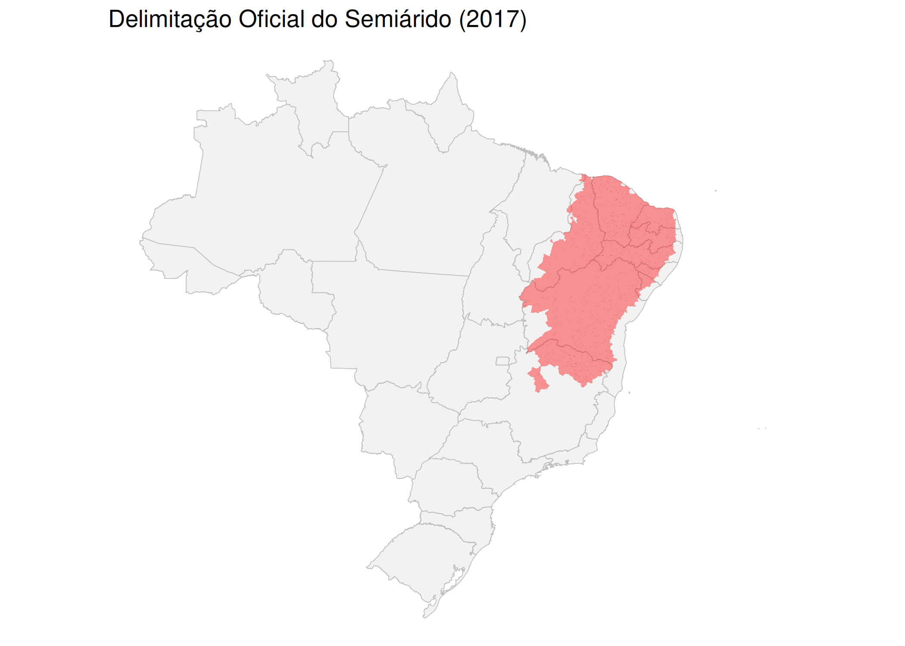
Dinâmica Urbana
Para estudos de urbanismo e morfologia das cidades, o pacote oferece dados que vão além do limite municipal administrativo.
Traz as áreas efetivamente urbanizadas, baseada em imagens de satélite e classificação do IBGE.
Código
urbano_rj <-read_urban_area(year =2015, code_state ="RJ", simplified =FALSE, showProgress =FALSE)estado_rj <-read_state(code_state ="RJ", showProgress =FALSE)ggplot() +geom_sf(data = estado_rj, fill ="white") +geom_sf(data = urbano_rj, fill ="darkblue", color =NA) +theme_void() +labs(title ="Manchas Urbanizadas no RJ (2015)")
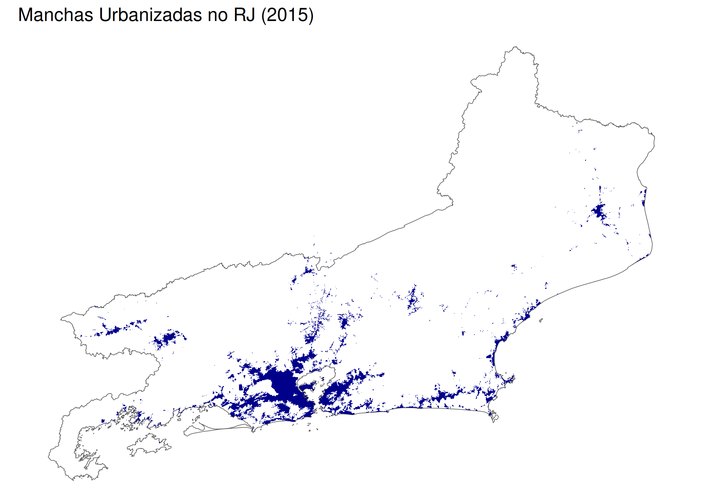
Concentrações Urbanas (read_urban_concentrations)
Foca em Arranjos Populacionais. Identifica agrupamentos de municípios com forte integração (deslocamento para trabalho/estudo), definindo grandes cidades que ultrapassam fronteiras municipais isoladas. É essencial para entender metropolização.
Para quem trabalha com dados do Censo Demográfico em escalas inframunicipais (dentro da cidade).
Áreas de Ponderação (read_weighting_area)
As Áreas de Ponderação são a menor unidade geográfica para a qual o IBGE divulga os dados da amostra do Censo (o questionário completo). São agregados de setores censitários.
code_weighting: Você pode passar o código do município (para baixar todas as áreas daquela cidade) ou do estado.
Código
ap_sobral <-read_weighting_area(code_weighting =2312908, year =2010, showProgress =FALSE)ggplot() +geom_sf(data = ap_sobral, fill ="white", color ="blue") +theme_void() +labs(title ="Áreas de Ponderação: Sobral/CE (2010)")
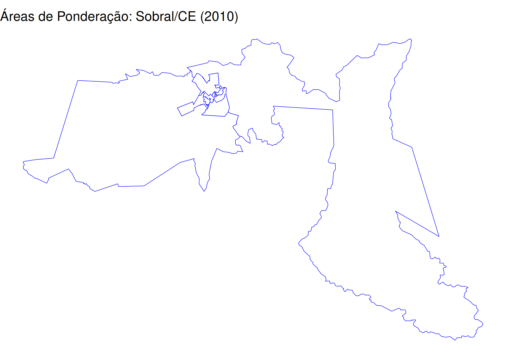
*Grade Estatística (read_statistical_grid)**
A Grade Estatística é uma solução para comparar dados ao longo do tempo sem sofrer com a mudança das fronteiras dos setores censitários. O IBGE divide o Brasil em células de grade (ex: 1km x 1km ou 200m x 200m em áreas urbanas).
code_grid: Pode ser a abreviação do estado (ex: “DF”). Se code_grid="all", baixa o Brasil todo (Cuidado: arquivo muito pesado).
Nota: A grade geralmente requer poder computacional maior devido ao número de polígonos.
Código
grid_df <-read_statistical_grid(code_grid =53, year =2010, showProgress =FALSE)plot(st_geometry(grid_df))
ImportanteDependência de Conexão
Como o pacote geobr baixa dados diretamente dos servidores do Ipea/IBGE, você precisa de uma conexão ativa com a internet.
Se você estiver rodando um script pesado que baixa muitas coisas, ocasionalmente o servidor pode falhar (timeout). O argumento cache = TRUE é seu melhor amigo aqui: uma vez baixado com sucesso, o dado fica salvo na sua máquina temporariamente, evitando downloads repetidos e falhas de conexão.
2.9.1 Pacote geodata
O pacote geodataHijmans (2025) oferece acesso direto a repositórios científicos globais, como o WorldClim (clima), SoilGrids (solos), GADM (fronteiras) e GBIF (biodiversidade).
A principal vantagem deste pacote é a padronização: ele baixa, descompacta e carrega os dados diretamente no R.
Instalação e Carregamento
O pacote está no CRAN. Como ele trabalha com dados raster e vetoriais otimizados, recomenda-se carregar também o pacote [terra](https://rspatial.org/pkg/terraPackage.pdf).
Código
if (!require("pacman")) install.packages("pacman")pacman::p_load(geodata, terra, ggplot2, tidyterra)
NotaCaminho dos Arquivos (Path)
Quase todas as funções do geodata exigem o argumento path. Este é o local no seu computador onde os arquivos (muitas vezes pesados) serão salvos.
Para testes rápidos, pode usar path = tempdir() (pasta temporária que apaga ao fechar o R).
Para projetos reais, defina uma pasta fixa (ex: path = "dados/") para evitar baixar a mesma coisa várias vezes.
Fronteiras Administrativas (gadm)
Enquanto a função world() baixa um mapa mundi simplificado, a função gadm() acessa o banco de dados de alta resolução das Áreas Administrativas Globais (GADM). Ela permite baixar os limites de um país específico e suas subdivisões internas.
country: Código ISO-3 do país (ex: “MOZ” para Moçambique, “BRA” para Brasil, “AGO” para Angola, etc.).
level: Nível de detalhe administrativo:
0: Fronteira do país.
1: Províncias/Estados.
2: Distritos/Municípios.
3: Postos administrativos (quando disponível).
Código
# Baixar limites de Moçambique (Nível 1 - Províncias)moz_prov <- geodata::gadm(country ="MOZ", level =1, path =tempdir())# O objeto é um SpatVector. Vamos converter para sf para usar no ggplotmoz_sf <-st_as_sf(moz_prov)ggplot() +geom_sf(data = moz_sf, aes(fill = NAME_1), color ="white", show.legend =FALSE) +geom_sf_text(data = moz_sf, aes(label = NAME_1), size =2.5, color ="black") +scale_fill_viridis_d(option ="mako", alpha =0.8) +theme_void() +labs(title ="Províncias de Moçambique", caption ="Fonte: GADM via pacote geodata")
Código
tryCatch({ moz_data_spat <-read_sf("/home/almonha/Downloads/Curso de Verão/moz_adm/moz_admbnda_adm1_ine_20190607.shp") }, error =function(e) {message("O link não funcionou vou baixar pelo GADM.")moz_data_spat <- geodata::gadm(country ="MOZ", level =2, path =tempdir(), version="latest")}) moz_sf <- sf::st_as_sf(moz_data_spat)
Topografia e Elevação (elevation_30s)
A elevação é uma covariável fundamental em modelos espaciais. A função elevation_30s baixa o Modelo Digital de Elevação (DEM) da missão SRTM da NASA para um país específico, com resolução de ~1km (30 segundos de arco).
Código
elevacao <-elevation_30s(long=32.583, lat =-25.967, path =tempdir())ggplot() +geom_spatraster(data = elevacao) +scale_fill_hypso_tint_c(palette ="dem_poster", name ="Altitude (m)") +geom_sf(data = moz_sf, fill =NA, color ="black", size =0.2) +theme_minimal() +labs(title ="Topografia de Moçambique")
Dados Climáticos (worldclim_country)
O WorldClim é o padrão para dados climáticos em ecologia e agricultura. A função worldclim_country baixa dados históricos (médias de 1970-2000) recortados para o país de interesse. Isso é muito mais leve do que baixar o raster global.
res: Resolução. 10, 5, 2.5 ou 0.5 minutos. (10 é grosseiro/leve, 0.5 é detalhado/pesado).
Código
#prec_moz <-worldclim_country(country ="MOZ", var ="prec", res =10, path =tempdir())# Selecionar apenas Janeiro (camada 1) e Julho (camada 7)prec_sazonal <- prec_moz[[c(1, 7)]]names(prec_sazonal) <-c("Janeiro (Chuvoso)", "Julho (Seco)")ggplot() +geom_spatraster(data = prec_sazonal) +facet_wrap(~lyr) +scale_fill_whitebox_c(palette ="deep", direction =1, name ="Chuva (mm)") +geom_sf(data = moz_sf, fill =NA, color ="gray30", size =0.1) +theme_void() +labs(title ="Precipitação Média Mensal (WorldClim v2.1)")
DicaVariáveis Bioclimáticas (Bio)
Para modelagem de distribuição de espécies (SDM), utilize var = "bio". Isso retornará 19 camadas contendo índices como “Temperatura do trimestre mais seco” ou “Precipitação do trimestre mais quente”, que são preditores ecológicos mais fortes do que médias mensais simples.
Dados de Solo (soil_af e soil_world)
Os dados de solo provêm do projeto SoilGrids (ISRIC). São dados complexos que incluem propriedades físicas (areia, argila) e químicas (pH, carbono) em várias profundidades padrão (0-5cm, 5-15cm, etc.).
Para países da África, existe a função otimizada soil_af (baseada no projeto iSDAsoil). Para o resto do mundo, usa-se soil_world.
O banco de dados global de solos é imenso (Gigabytes). Se você precisa apenas de dados para alguns pontos específicos (ex: estações de coleta), não baixe o raster inteiro. Use a conexão virtual (_vsi).
Código
#pontos de interesse (Longitude, Latitude)pontos_amostra <-data.frame(local =c("Maputo", "Beira", "Nampula"),lon =c(32.58, 34.83, 39.26),lat =c(-25.96, -19.83, -15.11))pontos_vect <-vect(pontos_amostra, geom =c("lon", "lat"), crs ="EPSG:4326")# var = "clay", depth = 15 (significa intervalo 5-15cm)raster_virtual <-soil_world_vsi(var ="clay", depth =15)#Extrair os valores para os pontosvalores_solo <- terra::extract(raster_virtual, pontos_vect)pontos_amostra$argila_percent <- valores_solo[,2] /10# SoilGrids geralmente vem escalado x10print(pontos_amostra)
Biodiversidade (sp_occurrence)
Esta função conecta-se ao GBIF (Global Biodiversity Information Facility) para baixar coordenadas de observação de espécies. É vital para estudos de ecologia.
Argumentos Principais:
genus: Gênero da espécie.
species: Epíteto específico. Se vazio "", baixa todo o gênero.
geo: Se TRUE, baixa apenas registros com coordenadas geográficas.
removeZeros: Remove registros com coordenadas (0,0) que geralmente são erros.
Código
moz_sf <-st_transform(moz_sf, crs =4326)elefantes <-sp_occurrence(genus ="Loxodonta", species ="africana", ext = moz_sf, # Usa o mapa baixado antes como limitegeo =TRUE, # Apenas com coordenadasremoveZeros =TRUE) # Remove erros de (0,0)# Converter para sfelefantes_sf <-st_as_sf(elefantes, coords =c("lon", "lat"), crs =4326)ggplot() +geom_sf(data = moz_sf, fill ="gray95", color ="gray50") +# Adiciona os pontos dos elefantesgeom_sf(data = elefantes_sf, color ="darkred", size =1, alpha =0.6) +theme_minimal() +labs(title ="Ocorrência de Elefantes")
Uso e Cobertura do Solo (landcover)
A função landcover() baixa mapas de cobertura do solo (floresta, agricultura, urbano, água) baseados no satélite ESA WorldCover. É um dado categórico de alta resolução.
path: Local para salvar. O download é feito por “tiles” (retângulos de área).
Código
# Baixa o uso do solo para a região central do paísuso_solo <-landcover(var ="trees", path =tempdir(), country ="MOZ")plot(uso_solo, main ="Cobertura Arbórea")
Acessibilidade (travel_time)
Fornece mapas raster de acessibilidade global, representando o tempo de viagem até centros urbanos ou portos, considerando infraestrutura de transporte e topografia.
Argumentos Principais:
to: Destino ("city" ou "port").
size: O tamanho do destino.
Para cidades: 1 (muito grande) a 9 (pequena).
Ex: size=1 calcula o tempo até cidades com > 5 milhões de habitantes.
Código
acesso <-travel_time(to ="city", size =4, path =tempdir())plot(acesso, main ="Tempo de Viagem para Cidades Médias", col =map.pal("inferno"))
DicaIntegre tudo
A verdadeira força da análise espacial surge ao cruzar essas camadas. Com os dados baixados acima, você poderia facilmente responder a perguntas complexas, como: Qual é a precipitação média (WorldClim) nos locais onde foram avistados elefantes (GBIF) na província de Maputo (GADM)?.
2.9.2 O pacote mapsf
O pacote mapsfGiraud (2025), desenvolvido por Timothée Giraud, é o sucessor do pacote cartography. O seu objetivo é permitir a criação de mapas temáticos de alta qualidade visual com um fluxo de trabalho simplificado, baseado em objetos sf.
Diferente do ggplot2, que trata o mapa como um gráfico estatístico num plano cartesiano, o mapsf, facilita a inclusão de elementos cartográficos clássicos (escala, norte, sombras, inset) e a gestão de layouts complexos.
Instalação e Carregamento
character(0)
── R CMD build ─────────────────────────────────────────────────────────────────
* checking for file ‘/tmp/RtmpWqmtsd/remotes194f338ad693e/ipeaGIT-geobr-0931733/r-package/DESCRIPTION’ ... OK
* preparing ‘geobr’:
* checking DESCRIPTION meta-information ... OK
* checking for LF line-endings in source and make files and shell scripts
* checking for empty or unneeded directories
* building ‘geobr_1.9.1.9000.tar.gz’
Código
if (!require("pacman")) install.packages("pacman")pacman::p_load(mapsf, sf)
Código
if (!require("pacman")) install.packages("pacman")pacman::p_load(mapsf, sf, geobr, dplyr, geodata)options(timeout =100000)pr_mun <-tryCatch({ dados <- geobr::read_municipality(code_muni ="PR", year =2020, showProgress =FALSE)if (is.null(dados)) {stop("O geobr retornou NULL (arquivo corrompido ou indisponível).") } dados }, error =function(e) {message(paste("Falha no geobr:", e$message))message("Tentando alternativa via pacote geodata") br_mun_all <- geodata::gadm(country ="BRA", level =2, path =tempdir()) br_mun_sf <-st_as_sf(br_mun_all) pr_mun <-subset(br_mun_sf, NAME_1 =="Paraná") pr_mun <-st_transform(pr_mun, crs =31982) pr_mun <- pr_mun[, c("NAME_2", "geometry")]names(pr_mun)[1] <-"name_muni"return(pr_mun)})if (exists("pr_mun") &&!is.null(pr_mun)) {print("Mapa carregado com sucesso!")plot(st_geometry(pr_mun), main ="Paraná")} else {stop("Falha total: Não foi possível carregar o mapa por nenhum método.")}
[1] "Mapa carregado com sucesso!"
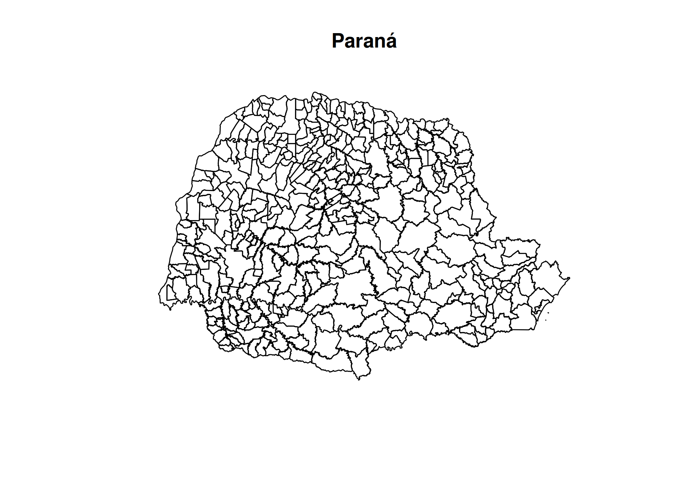
Código
#Transformar projeção para SIRGAS 2000 / UTM zone 22S (EPSG: 31982)pr_mun <-st_transform(pr_mun, crs =31982)#Simular dadosset.seed(123)pr_mun$populacao <-sample(5000:150000, size =nrow(pr_mun), replace =TRUE)# Inserir um outlier realista para Curitiba e Londrinapr_mun$populacao[pr_mun$name_muni =="Curitiba"] <-1963726pr_mun$populacao[pr_mun$name_muni =="Londrina"] <-575377# Calcular Densidade (Hab/km^2)pr_mun$area_km2 <-as.numeric(st_area(pr_mun)) /1e6pr_mun$densidade <- pr_mun$populacao / pr_mun$area_km2
Temas e Estética (mf_theme)
Antes de plotar qualquer dado, definimos o “humor” do mapa. A função mf_theme() controla margens, cores de fundo, fontes e estilos de borda. O pacote vem com vários temas pré-definidos (ex: “default”, “dark”, “ink”, “agolalight”, “iceberg”).
Código
# Define margens, cor de fundo e família de fontemf_theme("iceberg") mf_map(pr_mun, col ="grey80", border ="black") # Adicionamos apenas o contorno do estadopr_estado <-st_union(pr_mun)mf_map(pr_estado, col =NA, border ="grey40", lwd =1.5, add =TRUE)mf_title("Estado do Paraná", pos ="center", tab =FALSE)
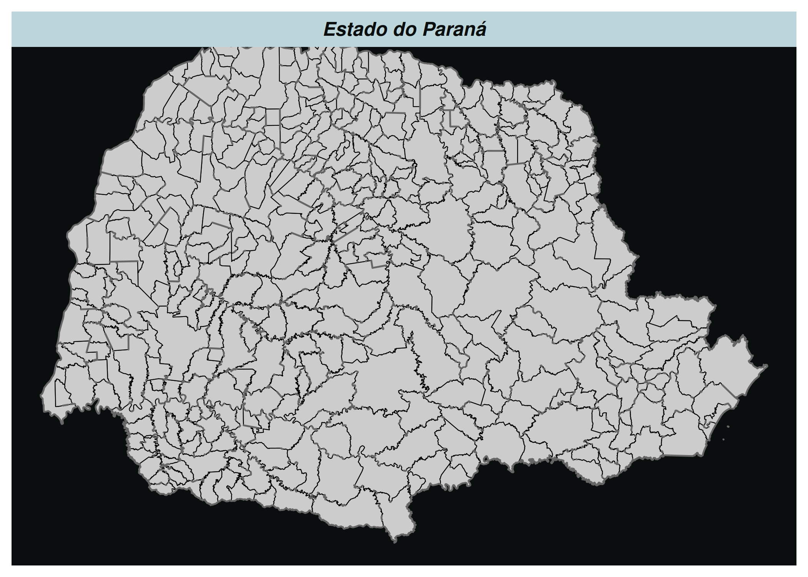
Figura 2.23: Mapa base com tema Iceberg e sem bordas internas.
Sombras e Profundidade (mf_shadow)
Um recurso estético simples, mas que adiciona grande valor visual (“efeito pop-up”), é a adição de sombras sob os polígonos. A função mf_shadow() desenha uma silhueta deslocada da geometria.
Código
mf_shadow(pr_mun, col ="gray50", cex =1.2)#Adicionar o mapa por cimamf_map(pr_mun, add =TRUE)
O Mapa Temático (mf_map)
Esta é a função central. O argumento type define como os dados serão representados cartograficamente.
x: Objeto sf.
var: Nome da coluna de atributos a ser mapeada.
type:
"choro": Mapa coroplético (áreas coloridas por faixas de valores).
"prop": Símbolos proporcionais (círculos).
"typo": Tipologia (mapa qualitativo/categórico).
Código
mf_theme("iceberg") #vc pode trocar aqui para tirar fundo preto#Sombra para destacar o estado do fundo (efeito 3D)mf_shadow(pr_mun, col ="grey50", cex =1.5)# 2. Mapa Temáticomf_map(x = pr_mun, var ="densidade", type ="choro",breaks ="quantile", nbreaks =6, pal ="YlOrRd", border =NA, leg_title ="Densidade\n(hab/km²)", leg_val_rnd =0, # Arredondar valores da legendaleg_pos ="topright",add =TRUE)#Contorno do Estado (acabamento)mf_map(pr_estado, col =NA, border ="white", lwd =0.5, add =TRUE)mf_title("Densidade Demográfica no Paraná", pos ="left")mf_credits("Fonte: IBGE/geobr | Elaboração Própria", cex =0.6)mf_scale(size =100, pos ="bottomright") # Escala discretamf_arrow(pos ="bottomright",adj =c(1, 1))
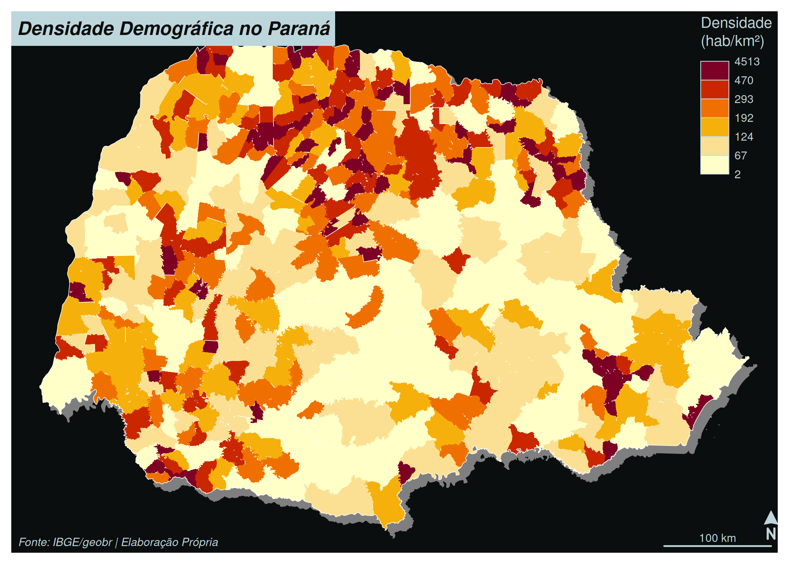
Figura 2.24: Densidade Demográfica com paleta contínua e layout limpo.
Elementos de Layout (mf_title, mf_scale, mf_arrow)
Um mapa técnico exige elementos de referência para leitura correta.
mf_title(): Título do mapa.
mf_scale(): Barra de escala.
mf_arrow(): Rosa dos ventos ou seta norte.
mf_credits(): Fonte dos dados e autoria.
Código
p_load(viridis) #para coresmf_theme(NULL)#mf_map(x = pr_mun, var ="area_km2", type ="choro",nbreaks =5,border ="white", lwd =0.5,leg_pos ="bottomright",leg_title =expression("Área Territorial"~km^2))#mf_map(x = pr_mun,var ="populacao",type ="prop",inches =0.25, # Tamanho do maior círculocol ="gray50", leg_pos ="topright",leg_title ="População Total",val_max =max(pr_mun$populacao), add =TRUE)#penas para cidades > 300k hab para não poluirbig_cities <- pr_mun[pr_mun$populacao >300000, ]mf_label(x = big_cities, var ="name_muni", col ="black", cex =0.7, overlap =FALSE, lines =FALSE)mf_scale(size =100, pos ="bottomleft") # Escala discretamf_arrow(pos ="bottomleft",adj =c(1, 1))
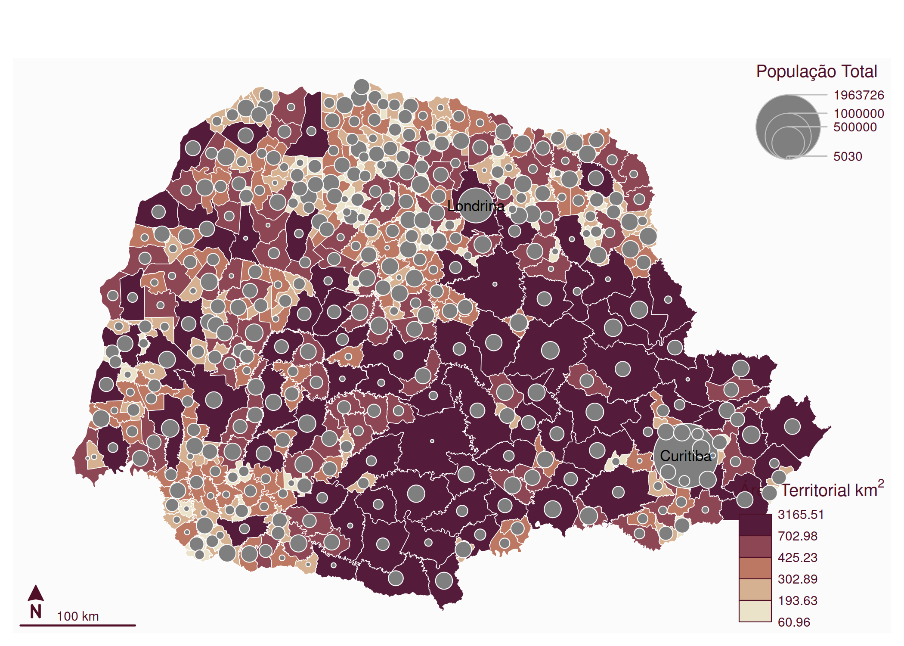
Figura 2.25: Mapa de dados simulados: Área (Cor) e População (Círculos).
Mapas de Localização (mf_inset_on)
Em vez de usar um mapa mundi (mf_worldmap), para dados estaduais é mais comum mostrar onde o estado fica dentro do país (Brasil). Usamos a função mf_inset_on() para criar um “mini-mapa” num canto da figura.
Precisaremos do contorno do Brasil para isso.
Código
# 1. Carregar bases do Brasilif (!require("pacman")) install.packages("pacman")pacman::p_load(sf, geobr, dplyr, geodata)options(timeout =100000)br <-tryCatch({message("Baixando Brasil via geobr...") dados <- geobr::read_country(year =2020, showProgress =FALSE)if (is.null(dados)) stop("geobr NULL") dados}, error =function(e) {message("Falha no geobr. Usando geodata (GADM)...") temp <- geodata::gadm(country ="BRA", level =0, path =tempdir()) |>st_as_sf()return(temp)})estados <-tryCatch({message("Baixando Estados via geobr...") dados <- geobr::read_state(year =2020, showProgress =FALSE)if (is.null(dados)) stop("geobr NULL") dados}, error =function(e) {message("Falha no geobr. Usando geodata (GADM)...") temp <- geodata::gadm(country ="BRA", level =1, path =tempdir()) |>st_as_sf() temp$abbrev_state <-gsub("BR\\.", "", temp$HASC_1) return(temp)})if (st_crs(br) !=st_crs(estados)) { br <-st_transform(br, st_crs(estados))}pr_destaque <- estados[estados$abbrev_state =="PR", ]p_load(viridis) #para coresmf_theme(NULL)#mf_map(x = pr_mun, var ="area_km2", type ="choro",nbreaks =5,border ="white", lwd =0.5,leg_pos ="bottomright",leg_title =expression("Área Territorial"~km^2))#mf_map(x = pr_mun,var ="populacao",type ="prop",inches =0.25, # Tamanho do maior círculocol ="gray50", leg_pos ="topleft",leg_title ="População Total",val_max =max(pr_mun$populacao), add =TRUE)#penas para cidades > 300k hab para não poluirbig_cities <- pr_mun[pr_mun$populacao >300000, ]mf_label(x = big_cities, var ="name_muni", col ="yellow", cex =0.7, overlap =FALSE, lines =FALSE)mf_scale(size =100, pos ="bottomleft") # Escala discretamf_arrow(pos ="bottomleft",adj =c(1, 1))#INÍCIO DO INSETmf_inset_on(x = br, pos ="topright", cex =0.25)#Desenhar todos os estados (Fundo)mf_map(estados, col ="grey90", border ="white", lwd =0.3)#Desenhar o destaquemf_map(pr_destaque, col ="black", border =NA, add =TRUE)#Caixabox(col ="grey50")mf_inset_off()
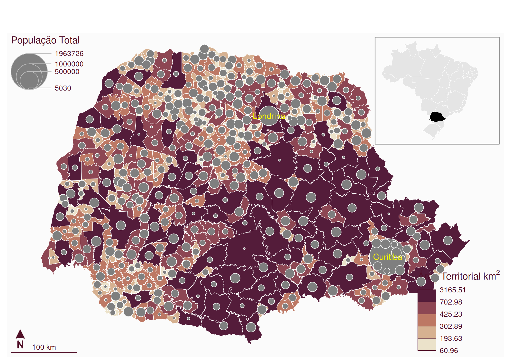
Figura 2.26
Exportação Vetorial (mf_svg)
Para finalização profissional em softwares de design (como Adobe Illustrator ou Inkscape), é preferível exportar o mapa em formato vetorial (SVG).
Código
#mf_svg(x = pr_mun, filename ="mapa_parana.svg", width =10)mf_theme("default")mf_map(pr_mun, var ="densidade", type ="choro")mf_title("Mapa Vetorial do Paraná")dev.off()
DicaDica de Layout
O mapsf funciona desenhando em camadas, como se estivesse pintando uma tela. A ordem dos comandos importa: primeiro o fundo, depois o mapa, depois as anotações. Se chamar mf_theme() no meio do código, ele não alterará o que já foi desenhado, apenas o que virá a seguir.
2.9.3 pacote ggmapinset: Insets e Zoom
O pacote ggmapinsetSuster (2024) estende as funcionalidades do ggplot2 para permitir a criação de painéis de zoom (insets) dentro da mesma área de plotagem.
Diferente de abordagens como o patchwork (que cola dois gráficos distintos lado a lado), o ggmapinset transforma a geometria dos dados. Ele recorta a área de interesse, amplia-a (zoom) e move-a para um espaço vazio no mapa (geralmente o oceano), mantendo a coerência dos dados e estilos numa única camada.
Instalação e Carregamento
Código
if (!require("pacman")) install.packages("pacman")# Nota: O ggmapinset é recente, garanta que tem uma versão atualizada do Rpacman::p_load(ggmapinset, ggplot2, sf, dplyr, geodata)
Para este exemplo, utilizaremos o mapa de Moçambique ao nível das províncias. Vamos focar na província de Maputo Cidade, que é geograficamente muito pequena e difícil de visualizar num mapa nacional sem zoom.
Código
#moz <- geodata::gadm(country = "MOZ", level = 1, path = tempdir())moz_sf <-st_as_sf(moz_sf)#Identificar o alvo do zoom: Maputo Cidademaputo_alvo <- moz_sf |>filter(ADM1_PT =="Maputo City") |>#se usar gadm troque ADM1_PT por NAME_!st_centroid()
Configuração do Inset (configure_inset)
Antes de plotar, precisamos definir o que queremos ampliar e para onde queremos mover essa ampliação.
A função configure_inset() cria um objeto de configuração que será usado pelo sistema de coordenadas.
shape: Define a forma e o local do recorte (shape_circle ou shape_rectangle).
scale: O fator de zoom (ex: 4 aumenta 4x).
translation: O deslocamento para onde mover o zoom (X, Y).
units: Unidade de medida (km, mi).
Código
config_maputo <- ggmapinset::configure_inset(shape = ggmapinset::shape_circle(centre = maputo_alvo, radius =50),scale =4, # Zoom forte (4x)translation =c(150, -100), # Move 150km para Leste e 100km para Sulunits ="km")
O Sistema de Coordenadas (coord_sf_inset)
Para que o ggplot2 entenda que deve aplicar essa transformação, substituímos o tradicional coord_sf() por coord_sf_inset().
inset: O objeto de configuração criado no passo anterior.
Código
# A estrutura básica do plot será:ggplot(moz_sf) + ggmapinset::coord_sf_inset(inset = config_maputo)
Geometrias Adaptadas (geom_sf_inset)
Se usarmos o geom_sf() padrão, ele desenhará o mapa normal. Para que as geometrias respeitem o zoom e sejam desenhadas tanto na base quanto no inset, usamos geom_sf_inset().
Código
p_load(ggmapinset)config_maputo_direita <-configure_inset(shape =shape_circle(centre = maputo_alvo, radius =50),scale =4,translation =c(350, -100), # pode alterar para mover units ="km")ggplot(moz_sf) + ggmapinset::geom_sf_inset(aes(fill = ADM1_PT), color ="white", show.legend =FALSE) +scale_fill_viridis_d(option ="mako") + ggmapinset::coord_sf_inset(inset = config_maputo_direita) +theme_void()
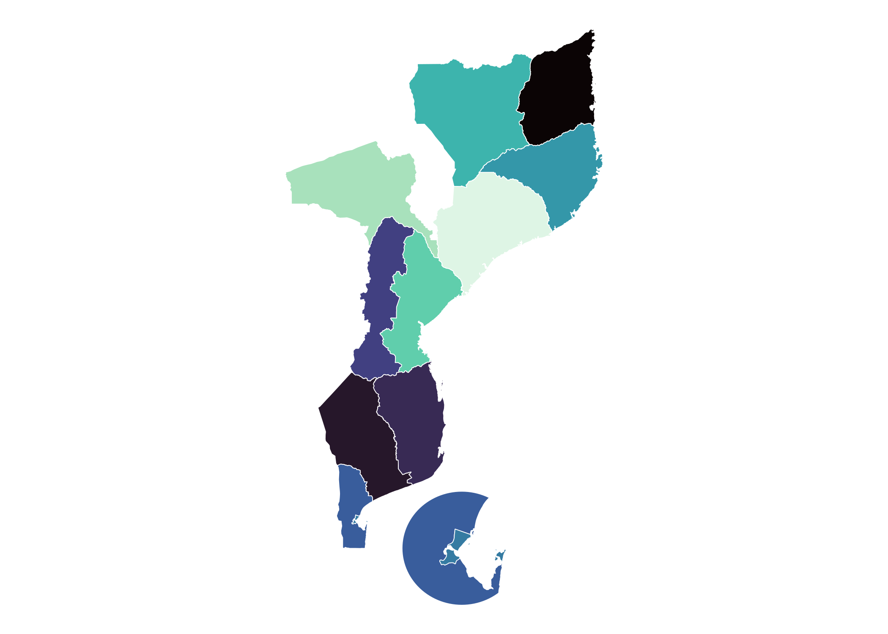
Figura 2.27: Mapa de Moçambique com zoom em Maputo (Básico)
Figura 2.28: Mapa de Moçambique com zoom da Província de Maputo
Moldura e Linhas de Conexão (geom_inset_frame)
Para que o mapa seja legível, precisamos desenhar a borda do inset e as linhas que o conectam ao local original (“burst lines”). A função geom_inset_frame() faz isso automaticamente.
source.aes: Estética do círculo original no mapa base (local de origem).
target.aes: Estética da moldura do zoom (local de destino).
Adicionar texto em mapas com inset é um desafio: o texto deve aparecer no local original ou no zoom?
O pacote fornece geom_sf_text_inset() para lidar com isso.
where: Define onde o texto aparece.
"inset": O texto aparece dentro da área ampliada (no novo local).
"base": O texto aparece no local original.
Código
ggplot(moz_sf) + ggmapinset::geom_sf_inset(aes(fill = .data[[coluna_nome]]), color ="white", show.legend =FALSE) + ggmapinset::geom_inset_frame(data =NULL,inherit.aes =FALSE ) + ggmapinset::coord_sf_inset(inset = config_maputo_direita) +scale_fill_viridis_d(option ="B", alpha =0.8) +labs(title ="")+geom_sf_text_inset(aes(label = ADM1_PT), size =3, color ="black",check_overlap =TRUE ) +theme_minimal()+theme(axis.title =element_blank(), # Remove títulos legenda eixo x e y#axis.text = element_blank(), # Remove os números das coordenadasaxis.ticks =element_blank(), # Remove os tracinhos dos eixos (grade)#panel.grid = element_blank() # Remove as grades de fundo )
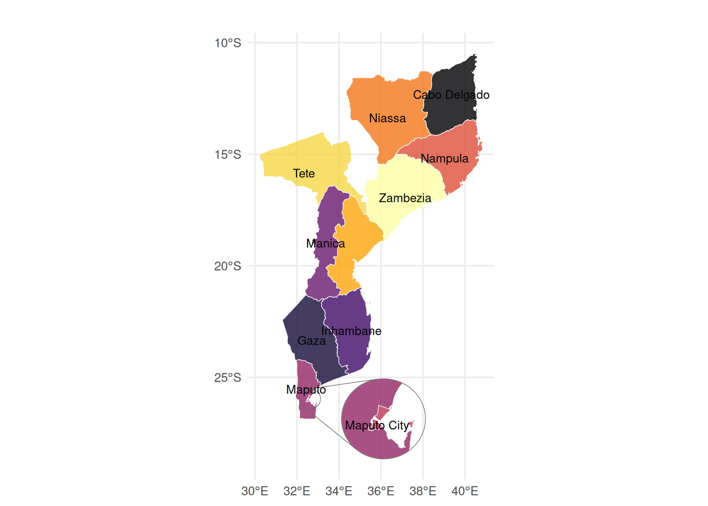
Figura 2.30: Rótulos aplicados no mapa
Formas Alternativas (shape_rectangle)
Além de círculos, podemos usar retângulos. Vamos tentar um exemplo diferente: dar um zoom na região central (Sofala/Beira).
Código
#Definir centro na Beira (aproximado)centro_beira <- sf::st_sfc(sf::st_point(c(34.8, -19.8)), crs =4326)#Configurar Retânguloconfig_retangulo <-configure_inset(shape =shape_rectangle(centre = centro_beira, hwidth =150, hheight =100), scale =2.5,translation =c(700, -140), # Move 400km para o oceanounits ="km")ggplot(moz_sf) +geom_sf_inset(fill ="wheat", color ="tan") +# Estilizar a moldura do inset ggmapinset::geom_inset_frame(data =NULL,inherit.aes =FALSE ) +coord_sf_inset(inset = config_retangulo) +theme_void() +labs(title ="Zoom na Região Centro (Sofala)")
Figura 2.31: Inset retangular na região da Beira
Transformação Manual (transform_to_inset)
Em casos avançados, pode querer transformar os dados manualmente para realizar cálculos na geometria transformada ou usar com outros pacotes de plotagem.
transform_to_inset(x, inset): Recebe um objeto sf e a configuração, e retorna um novo objeto sf com as geometrias modificadas (deslocadas e ampliadas).
Código
# Cria um novo objeto sf com a geometria transformadamoz_transformado <-transform_to_inset(moz_sf, config_maputo)# Note que as coordenadas mudaram para acomodar o inset# Isso é útil para debugging ou análises personalizadasglimpse(moz_transformado)
O geom_sf_inset possui dois argumentos poderosos: map_base e map_inset.
map_base = "none": Desenha apenas o inset (zoom), escondendo o mapa original.
map_inset = "none": Desenha apenas o mapa original, escondendo o zoom.
Isso permite aplicar estilos diferentes (ex: cores diferentes) para a base e para o zoom, chamando a função duas vezes com configurações diferentes.
2.9.4 Pacote ggrepel
Uma das maiores frustrações ao criar gráficos no ggplot2 é a sobreposição de rótulos de texto (labels), tornando a visualização ilegível. O pacote ggrepelSlowikowski (2024), desenvolvido por Kamil Slowikowski, resolve este problema.
Instalação e Carregamento
Código
if (!require("pacman")) install.packages("pacman")pacman::p_load(ggrepel, ggplot2, dplyr)
Antes de usar o ggrepel, vamos ver o comportamento padrão do ggplot2 (geom_text) quando tentamos rotular muitos pontos. Usaremos o dataset mtcars para rotular os modelos de carros.
Figura 2.32: Texto sobreposto e ilegível com geom_text padrão
Rótulos de Texto (geom_text_repel)
Para corrigir o gráfico acima, substituímos geom_text() por geom_text_repel(). O pacote calculará automaticamente a melhor posição para cada rótulo e desenhará linhas de conexão (segments) se necessário.
Se preferir que o texto fique dentro de uma caixa (para melhor contraste com o fundo), use geom_label_repel(). Ele funciona de forma idêntica ao geom_text_repel, mas desenha um retângulo atrás do texto.
Código
carros_eficientes <- mtcars |>mutate(nome =rownames(mtcars)) |>mutate(label_plot =ifelse(mpg >25, nome, ""))ggplot(carros_eficientes, aes(wt, mpg, label = label_plot)) +geom_point(color ="grey50") +# Destacar os pontos eficientesgeom_point(data =filter(carros_eficientes, mpg >25), color ="blue") +geom_label_repel(box.padding =0.5, # Espaço ao redor da caixapoint.padding =0.5, # Espaço entre a ponta da linha e o pontosegment.color ="grey50"# Cor da linha de conexão ) +theme_minimal()
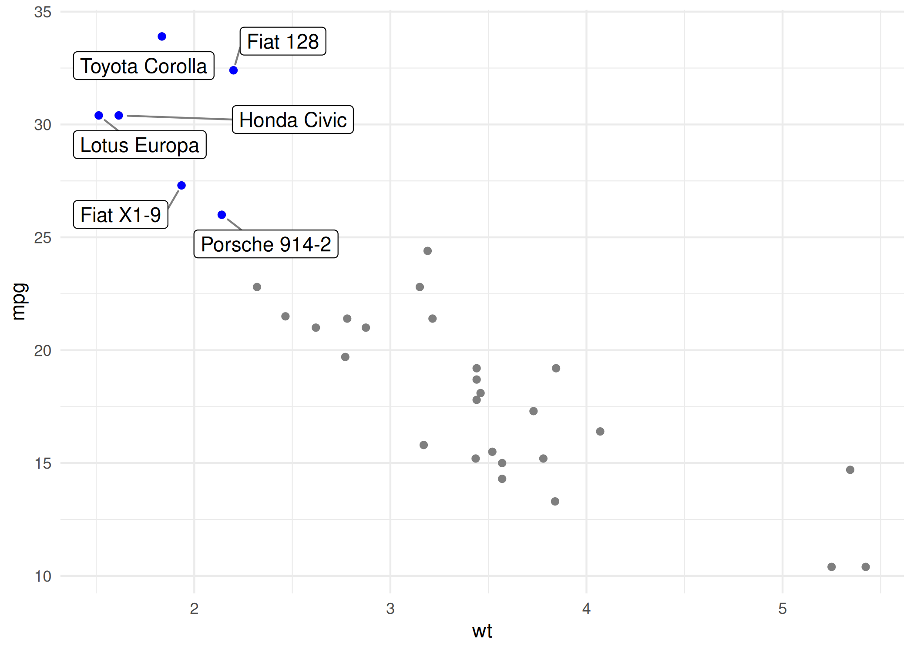
Figura 2.34: Uso de geom_label_repel para destaque
Controle Fino (force, max.overlaps)
force: Controla a força de repulsão. Valores maiores afastam mais os rótulos.
max.overlaps: Por padrão, o ggrepel esconde rótulos se houver muita sobreposição. Aumente este valor (padrão é 10) se quiser forçar a exibição de todos os rótulos, mesmo que fique um pouco bagunçado.
Código
geom_text_repel(force =2, # Mais força de repulsãomax.overlaps =Inf, # Nunca esconder rótulos (Infinito)min.segment.length =0# Desenhar linha para todos os rótulos, mesmo os próximos)
Uso em Mapas
O ggrepel integra-se perfeitamente com mapas (geom_sf). Para isso, usamos a geometria geom_sf_text() ou geom_text_repel combinada com stat_sf_coordinates(), que extrai automaticamente as coordenadas X e Y dos centroides dos polígonos.
Código
#pr_destaque <- pr_mun |>filter(populacao >200000)ggplot(pr_mun) +geom_sf(fill ="white", color ="grey80") +geom_sf(data = pr_destaque, fill ="orange") +# Usar geom_text_repel geom_text_repel(data = pr_destaque,aes(label = name_muni, geometry = geom),stat ="sf_coordinates", # Calcula o X/Y do centroide automaticamentemin.segment.length =0,box.padding =1,size =3 ) +theme_void() +labs(title ="Municípios em Destaque no Paraná")
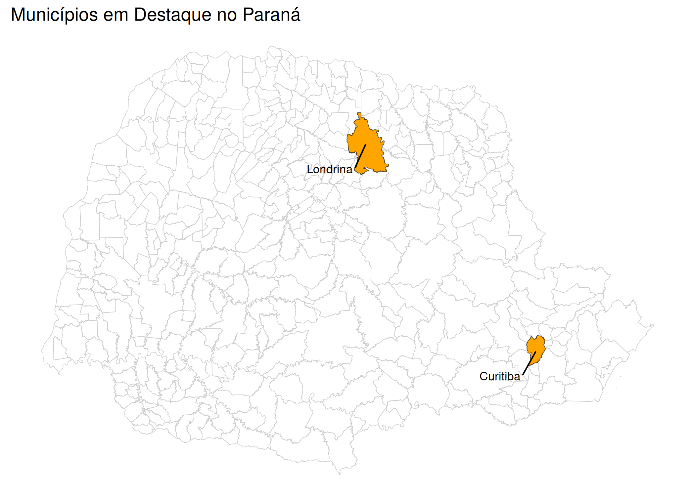
Figura 2.35: Rótulos em mapas com ggrepel
DicaSegmentos e Setas
Você pode estilizar as linhas que conectam o texto ao ponto usando argumentos como arrow, segment.size, segment.color e curvature (para linhas curvas). Isso é útil para criar anotações elegantes em gráficos de publicação.
2.9.5 Pacote ggspatial
O ggplot2 é excelente para plotar geometrias, mas falta-lhe “vocabulário cartográfico” nativo. O pacote ggspatialDunnington (2025), desenvolvido por Dewey Dunnington, preenche essa lacuna fornecendo geometrias e anotações específicas para mapas.
Ele permite adicionar facilmente barras de escala, setas de norte e, crucialmente, mapas de fundo (basemaps) provenientes de serviços como OpenStreetMap, sem sair da sintaxe do ggplot.
Instalação e Carregamento
Para este exemplo, usaremos os dados do estado do Rio de Janeiro provenientes do pacote geobr.
Código
if (!require("pacman")) install.packages("pacman")pacman::p_load(ggspatial, ggplot2, sf, terra, geobr, prettymapr, rosm)# Carregar dados do Rio de Janeiro#rj_mun <- read_municipality(code_muni = "RJ", year = 2020, showProgress = FALSE)rj_mun <-tryCatch({message("Baixando RJ via geobr...") dados <- geobr::read_municipality(code_muni ="RJ", year =2020, showProgress =FALSE)if (is.null(dados)) stop("geobr retornou NULL") dados}, error =function(e) {message("Falha no geobr. Usando geodata (GADM)...") br_all <- geodata::gadm(country ="BRA", level =2, path =tempdir()) |>st_as_sf() rj_mun <-subset(br_all, NAME_1 =="Rio de Janeiro") rj_mun <- rj_mun[, c("NAME_2", "geometry")]names(rj_mun)[1] <-"name_muni" rj_mun <-st_transform(rj_mun, crs =31983)return(rj_mun)})
Mapas Base (Basemaps) (annotation_map_tile)
Uma das funcionalidades mais desejadas é adicionar um mapa de ruas ou satélite como fundo. A função annotation_map_tile() faz isso automaticamente, baixando as “telhas” (tiles) necessárias para a área do seu gráfico.
type: O tipo de mapa. Padrão é "osm" (OpenStreetMap). Outras opções comuns incluem "cartolight", "cartodark", "hotstyle".
zoom: Nível de detalhe. Se omitido, o pacote calcula automaticamente. Zooms altos baixam muitos arquivos.
progress: Defina como "none" para evitar poluição visual no console durante o download.
Código
ggplot(rj_mun) +#Adicionar o mapa base (deve vir primeiro para ficar no fundo)annotation_map_tile(type ="osm", progress ="none") +#Adicionar os dados vetoriais por cima (com transparência)geom_sf(fill ="orange", alpha =0.4, color ="black", size =0.1) +theme_minimal()
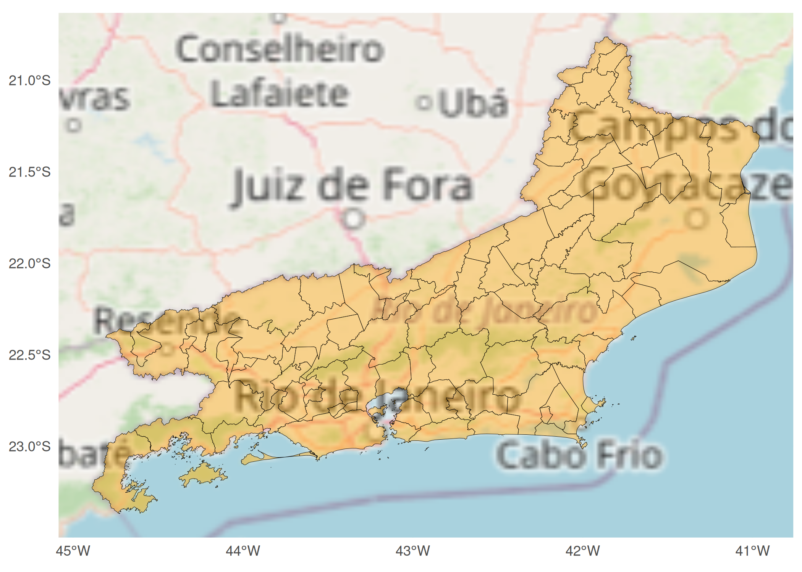
Figura 2.36: Municípios do RJ sobre base do OpenStreetMap
Barra de Escala (annotation_scale)
Diferente do mapsf, o ggspatial adiciona a escala como uma camada (layer) do ggplot.
location: Posição (“tl” = top-left, “br” = bottom-right, etc.).
width_hint: Proporção da largura do mapa que a escala deve ocupar (ex: 0.2 para 20%).
style: Estilo visual (“bar” ou “ticks”).
Código
ggplot(rj_mun) +annotation_map_tile(type ="osm", progress ="none") +geom_sf(fill ="orange", color ="white") +annotation_scale(location ="br", # Bottom right (Canto inferior direito)width_hint =0.3, # Tamanho relativostyle ="bar"# Estilo barra sólida ) +theme_minimal()
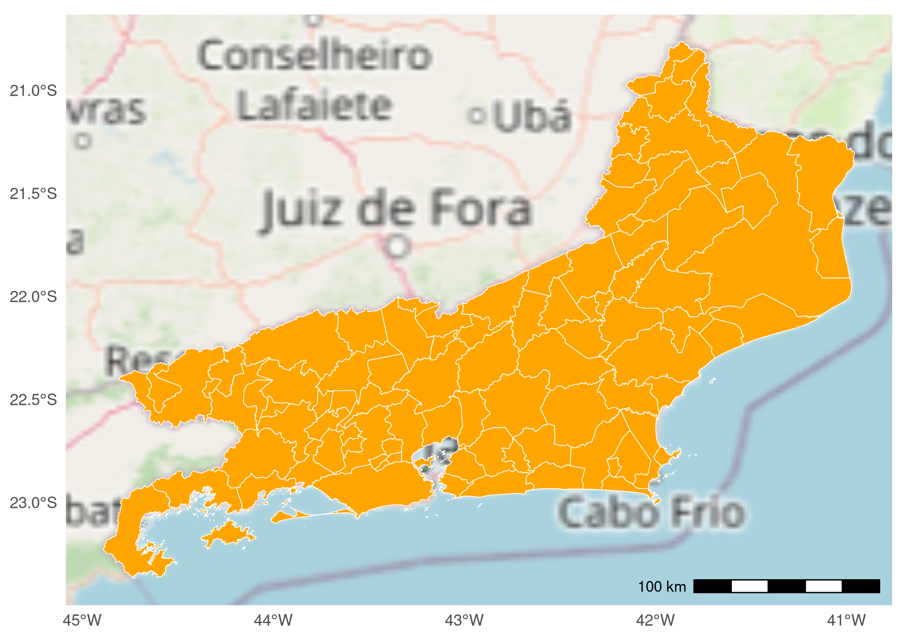
Figura 2.37: Adicionando barra de escala ao mapa do RJ
Seta Norte (annotation_north_arrow)
Adiciona a rosa dos ventos ou seta norte.
location: Posição.
which_north: "true" (Norte geográfico) ou "grid" (Norte da grade).
style: Estilo visual. O pacote oferece várias funções de estilo:
north_arrow_orienteering (Padrão)
north_arrow_fancy_orienteering (Mais elaborado)
north_arrow_minimal (Simples)
north_arrow_nautical (Estilo náutico)
Código
ggplot(rj_mun) +annotation_map_tile(type ="osm", progress ="none") +geom_sf(fill ="orange", color ="white") +annotation_scale(location ="br", width_hint =0.3, style ="bar" ) +# Norte Simples no topo esquerdoannotation_north_arrow(location ="tl", which_north ="true",height =unit(1, "cm"),width =unit(1, "cm"),style =north_arrow_minimal() ) +# Norte Náutico no fundo direito (apenas demonstração)annotation_north_arrow(location ="br", style =north_arrow_nautical(),pad_y=unit(0.55, "cm") ) +theme_minimal()
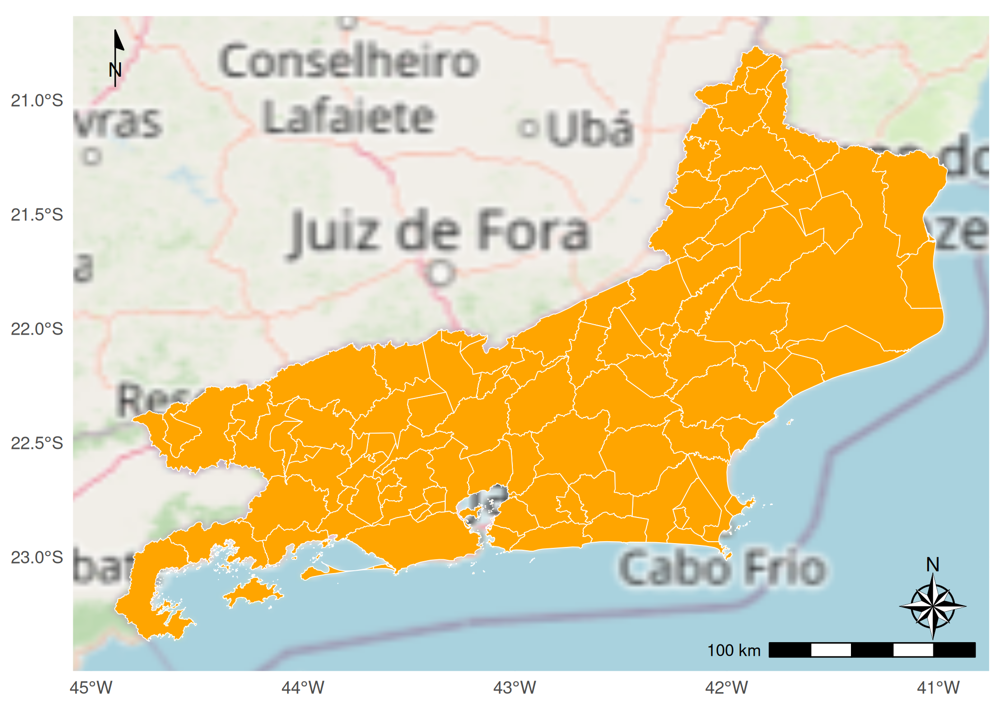
Figura 2.38: Estilos de Seta Norte
Trabalhando com Rasters (layer_spatial)
O ggplot2 nativo (geom_raster) exige que convertamos imagens para data.frames, o que é lento e consome memória. O ggspatial fornece a função layer_spatial(), que aceita objetos SpatRaster (do pacote terra) ou stars e os plota corretamente, lidando com projeções automaticamente.
Figura 2.39: Plotando raster diretamente com layer_spatial
Dica
Ao usar annotation_map_tile, o R baixa as imagens da internet a cada plotagem se elas não estiverem em cache. Se o servidor de tiles (ex: OSM) estiver lento, tente outro type como "cartolight" ou "hotstyle". Certifique-se também de que seus dados sf tenham um CRS definido (st_crs()).
2.9.6 Mapas Interativos na Web: O pacote leaflet
O pacote leafletCheng et al. (2025) é a ponte entre a linguagem R e a biblioteca JavaScript homônima, que é o padrão da indústria para cartografia web. Diferente do mapsf ou ggplot2, que geram uma imagem estática (como uma foto), o leaflet gera um widget HTML.
Tiles (Base): O fundo do mapa (ruas, satélite). São imagens estáticas carregadas da internet.
Markers/Polygons (Vetores): Seus dados desenhados sobre a base.
Popups/Labels: Interatividade que surge ao clicar ou passar o mouse.
Controls: Elementos de interface (zoom, seletor de camadas, legenda).
Instalação e Dados (SP)
Código
if (!require("pacman")) install.packages("pacman")pacman::p_load(leaflet, sf, dplyr, geobr)#Base Cartográfica: Região Metropolitana de SPif (!exists("rm_sp")) { sp_mun <-read_municipality(code_muni ="SP", year =2020, showProgress =FALSE) capital <- sp_mun[sp_mun$name_muni =="São Paulo", ] vizinhos <-st_filter(sp_mun, capital, .predicate = st_touches) rm_sp <-rbind(capital, vizinhos)}#Escolas (INEP)escolas_br <-read_schools(year =2020, showProgress =FALSE)escolas_rm <-st_filter(escolas_br, rm_sp) |>select(nome = name_school,endereco = address,nivel = education_level,admin = admin_category ) |>filter(!is.na(nome), !is.na(geom))leaflet(escolas_rm) |># Mapas BaseaddTiles(group ="OSM (Rua)") |>addProviderTiles(providers$CartoDB.Positron, group ="Clean (Claro)") |># Camada de Contexto (Municípios)addPolygons(data = rm_sp,color ="#444", weight =1, fillOpacity =0.1,group ="Limites Municipais",label =~name_muni ) |># Camada de Escolas (Clusters)addCircleMarkers(radius =5,color ="#2E86C1", # Azulstroke =FALSE, fillOpacity =0.8,# Popup Rico com dados reais da escolapopup =~paste0("<b>Escola:</b> ", nome, "<br>","<b>Nível:</b> ", nivel, "<br>","<b>Administração:</b> ", admin, "<br>","<b>Endereço:</b> ", endereco ),# Clusterização Automática (Essencial para muitos pontos)clusterOptions =markerClusterOptions(),group ="Escolas" ) |># Controle de CamadasaddLayersControl(baseGroups =c("Clean (Claro)", "OSM (Rua)"),overlayGroups =c("Escolas", "Limites Municipais"),options =layersControlOptions(collapsed =FALSE) )
Figura 2.40: Distribuição Real de Escolas na RM de São Paulo (Dados INEP/geobr)
O Mapa Base e a Sintaxe Pipe (|>)
leaflet(): Instancia o objeto do mapa.
addTiles(): Adiciona o mapa base padrão (OpenStreetMap).
setView(): (Opcional) Define onde a câmera do mapa começa posicionada.
Para colorir os municípios baseados em dados (ex: Área), precisamos mapear a variável numérica para uma paleta de cores.
ImportanteOperador Til (~)
No leaflet, diferentemente do ggplot2 (que usa aes()), usamos o símbolo ~ (til) para indicar que um argumento deve ser lido de dentro dos dados.
color = "red": Todos os polígonos ficam vermelhos.
color = ~paleta(variavel): A cor depende da variável de cada polígono.
Código
# Definir a paleta de cores (Quantis)rm_sp$area_km2 <-as.numeric(st_area(rm_sp)) /1e6pal_area <-colorQuantile("YlOrRd", domain = rm_sp$area_km2, n =5)labels_html <-paste0("<b>", rm_sp$name_muni, "</b>: ", round(rm_sp$area_km2), " km<sup>2</sup>") |>lapply(htmltools::HTML) # Importante: Converte texto para objeto HTMLleaflet(rm_sp) |>#ESCOLHA DO MAPA BASEaddProviderTiles(providers$CartoDB.Positron) |>#tem outras além de CartoDB.Positron#CAMADA DE POLÍGONOSaddPolygons(fillColor =~pal_area(area_km2), # O til (~) mapeia a coluna aos dadosweight =1, color ="white", # Cor da linha de contornofillOpacity =0.7, # Transparência do preenchimento# Comportamento ao passar o mouse (Realce)highlightOptions =highlightOptions(color ="#666", weight =3,bringToFront =TRUE ),# Rótulo (Label/Tooltip)label =~ labels_html ) |># LegendaaddLegend(position ="bottomright", pal = pal_area, values =~area_km2, title ="Área (Quantis)" )
Figura 2.42: Mapa Coroplético Interativo: Área dos Municípios
Marcadores, Popups HTML e Clusters
Uma das maiores vantagens do leaflet é o suporte a HTML dentro dos popups e a capacidade de agrupar pontos automaticamente (Cluster) para evitar poluição visual quando há milhares de registros.
Código
if (!exists("rm_sp")) {library(geobr) sp_mun <-read_municipality(code_muni ="SP", year =2020, showProgress =FALSE) capital <- sp_mun[sp_mun$name_muni =="São Paulo", ] rm_sp <- capital }#set.seed(123) pontos_poi <-st_sample(rm_sp, size =100) |>st_as_sf() |>mutate(id =1:100,tipo =sample(c("Escola", "Hospital", "UBS"), 100, replace =TRUE),atendimentos =round(runif(100, 50, 500)) )pal_tipo <-colorFactor(c("#1f77b4", "#d62728", "#2ca02c"), domain = pontos_poi$tipo)leaflet(pontos_poi) |>addProviderTiles(providers$CartoDB.Positron) |>addCircleMarkers(radius =6,color =~pal_tipo(tipo),stroke =FALSE, fillOpacity =0.8,label =~tipo,# HTML dentro do Popuppopup =~paste0("<strong>ID:</strong> ", id, "<br>","<strong>Tipo:</strong> ", tipo, "<br>","<strong>Média Atend.:</strong> ", atendimentos ),clusterOptions =markerClusterOptions() )
Controle de Camadas (addLayersControl)
BaseGroups: Camadas de fundo mutuamente exclusivas (ex: Dia ou Noite).
OverlayGroups: Camadas de dados que podem ser ligadas/desligadas independentemente.
Código
leaflet() |>addTiles(group ="OSM (Ruas)") |>addProviderTiles(providers$Esri.WorldImagery, group ="Satélite") |>addPolygons(data = rm_sp, color ="white", weight =2, fillColor ="transparent",group ="Limites Municipais") |>addCircleMarkers(data = pontos_poi, radius =5, color ="orange", fillOpacity =0.8, stroke =FALSE,group ="Equipamentos Públicos") |>addLayersControl(baseGroups =c("OSM (Ruas)", "Satélite"),overlayGroups =c("Limites Municipais", "Equipamentos Públicos"),options =layersControlOptions(collapsed =FALSE) # Menu sempre aberto )
Figura 2.43: Controle de Camadas Completo
Código
# Fonte: Este exemplo foi retirado no link: https://r-spatial.github.io/mapview/articles/mapview_06-add.htmlp_load(leafem, mapview)m <-mapview(breweries)leafem::addLogo(m, "https://jeroenooms.github.io/images/banana.gif", #pode adicionar imagem aquiposition ="bottomleft",offset.x =5,offset.y =40,width =100,height =100)
DicaExportação e Salvamento
O leaflet gera HTML. Para salvar seu mapa:
Use o pacote mapview: mapview::mapshot(mapa, file = "mapa.png").
DicaPara ir além
O ecossistema de análise espacial no R é vasto e dinâmico, com novos pacotes surgindo constantemente. A seleção apresentada neste capítulo focou nas ferramentas essenciais para resolver os problemas mais frequentes do dia a dia.
Vale mencionar também o excelente pacote tmap, que oferece uma sintaxe flexível para mapas temáticos (similar ao ggplot2). Para se manter atualizado e buscar inspiração, recomendo duas fontes indispensáveis:
R-Spatial.org: O blog oficial com as últimas novidades sobre a evolução espacial do R.
The R Graph Gallery: Uma coleção com os melhores códigos e exemplos visuais, cobrindo desde gráficos básicos até mapas complexos.
Bandyopadhyay, Soutir, e Suhasini Subba Rao. 2017. “A test for stationarity for irregularly spaced spatial data”. Journal of the Royal Statistical Society Series B: Statistical Methodology 79 (1): 95–123.
Bartholomew, David J. 1995. “What is statistics?”Journal of the Royal Statistical Society Series A: Statistics in Society 158 (1): 1–20.
Boschma, Ron. 2005. “Proximity and innovation: a critical assessment”. Regional studies 39 (1): 61–74.
Brunsdon, Chris, A Stewart Fotheringham, e Martin E Charlton. 1996. “Geographically weighted regression: a method for exploring spatial nonstationarity”. Geographical analysis 28 (4): 281–98.
Burbano-Moreno, Alvaro Alexander, e Vinı́cius Diniz Mayrink. 2024. “Spatial functional data analysis: Irregular spacing and bernstein polynomials”. Spatial Statistics 60: 100832.
Chen, Wanfang, Marc G Genton, e Ying Sun. 2021. “Space-time covariance structures and models”. Annual Review of Statistics and Its Application 8 (1): 191–215.
Cheng, Joe, Barret Schloerke, Bhaskar Karambelkar, Yihui Xie, e Garrick Aden-Buie. 2025. leaflet: Create Interactive Web Maps with the JavaScript ’Leaflet’ Library. https://doi.org/10.32614/CRAN.package.leaflet.
Conte, Bruno. 2023. “Lecture 02: Spatial Data Theory and Tools (a.k.a. GIS Tools Lab.)”. Alma Mater Studiorum Università di Bologna; Lecture slides.
Cox, Simon Jonathan David. 2011. ISO 19156:2011 - Geographic Information – Observations and Measurements. International Organization for Standardization. https://doi.org/10.13140/2.1.1142.3042.
Cressie, Noel, e Matthew T Moores. 2022. “Spatial statistics”. Em Encyclopedia of mathematical geosciences, 1–11. Springer.
Delicado, Pedro, Ramón Giraldo, Carlos Comas, e Jorge Mateu. 2010. “Statistics for spatial functional data: some recent contributions”. Environmetrics: The official journal of the International Environmetrics Society 21 (3-4): 224–39.
Dreesman, Johannes M, e Gerhard Tutz. 2001. “Non-Stationary Conditional Models for Spatial Data Based on Varying Coefficients”. Journal of the Royal Statistical Society: Series D (The Statistician) 50 (1): 1–15.
Fávero, Luiz Paulo Lopes. 2003. “Modelos de preços hedônicos aplicados a imóveis residenciais em lançamento no municı́pio de São Paulo.” Tese de doutorado, Universidade de São Paulo.
Fienberg, Stephen E. 2014. “What is statistics?”Annual review of statistics and its application 1 (1): 1–9.
Getis, Arthur. 1999. “Spatial statistics”. Geographical information systems 1: 239–51.
Iliffe, Jonathan. 2000. Datums and map projections for remote sensing, GIS, and surveying. CRC Press.
Janssen, Volker. 2009. “Understanding coordinate reference systems, datums and transformations”.
Kaplan, Elliott D, e Christopher Hegarty. 2017. Understanding GPS/GNSS: principles and applications. Artech house.
Kelejian, Harry, e Gianfranco Piras. 2017. Spatial econometrics. Academic Press.
Langley, Richard B et al. 1999. “Dilution of precision”. GPS world 10 (5): 52–59.
Leick, Alfred, Lev Rapoport, e Dmitry Tatarnikov. 2015. GPS satellite surveying. John Wiley & Sons.
Li, Habin, e James F Reynolds. 1994. “A simulation experiment to quantify spatial heterogeneity in categorical maps”. Ecology 75 (8): 2446–55.
Loonis, Vincent, e Marie-Pierre de Bellefon. 2018. “Handbook of spatial analysis: theory and application with R”. Paris: Eurostat, INSEE, 394.
Mateu, Jorge, e Ramón Giraldo. 2022. “Introduction to Geostatistical Functional Data Analysis”. Geostatistical Functional Data Analysis, 1–25.
Mocnik, Franz-Benjamin. 2023. “Why we can read maps”. Cartography and Geographic Information Science 50 (1): 1–19.
Møller, Jesper, e Rasmus P Waagepetersen. 2007. “Modern statistics for spatial point processes”. Scandinavian Journal of Statistics 34 (4): 643–84.
Monmonier, Mark. 2005. “Lying with maps”. Statistical science, 215–22.
Moreno, Alvaro Alexander Burbano et al. 2023. “Functional data analysis: spatial association of curves and irregular spacing”.
Nhancololo, A. M. 2024. “Processos pontuais espaciais univariados aplicados à distribuição de espécies arbóreas em florestas naturais”. Dissertação (Mestrado em Estatística e Experimentação Agropecuária), Lavras: Universidade Federal de Lavras.
Nhancololo, A. M., Wélson A. Oliveira, Fernandes A. C. Pereira, Bruno Montoani Silva, e João Domingos Scalon. 2024. “Comparison between the laboratory method and the Stolf penetrometer in soil density analysis: a study using geostatistical approaches”. Sigmae 13 (1): 63–78. https://doi.org/10.29327/2520355.13.1-7.
Pebesma, Edzer. 2018. “Simple features for R: standardized support for spatial vector data”.
Peng, Zhan, e Ryo Inoue. 2024. “Multiscale Continuous and Discrete Spatial Heterogeneity Analysis: The Development of a Local Model Combining Eigenvector Spatial Filters and Generalized Lasso Penalties”. Geographical Analysis 56 (2): 303–27.
Pereira, Rafael HM, e Caio Nogueira Goncalves. 2024. “geobr: download official spatial data sets of Brazil”. R package version 1 (0): 18.
Prestby, Timothy J. 2025. “Trust in maps: What we know and what we need to know”. Cartography and Geographic Information Science 52 (1): 1–18.
Ramsay, James O, e Bernard W Silverman. 2005. Functional data analysis. Springer.
Sahu, Sujit. 2022. Bayesian modeling of spatio-temporal data with R. Chapman; Hall/CRC.
Schmidt, Alexandra M, e Anthony O’Hagan. 2003. “Bayesian inference for non-stationary spatial covariance structure via spatial deformations”. Journal of the Royal Statistical Society Series B: Statistical Methodology 65 (3): 743–58.
Tobler, Waldo R. 1970. “A computer movie simulating urban growth in the Detroit region”. Economic geography 46 (sup1): 234–40.
Unwin, David J, e Leslie W Hepple. 1974. “The statistical analysis of spatial series”. Journal of the Royal Statistical Society: Series D (The Statistician) 23 (3-4): 211–27.
Vanicek, Petr, e Edward J Krakiwsky. 2015. Geodesy: the concepts. Elsevier.
Wagner, Helene H, e Marie-Josée Fortin. 2005. “Spatial analysis of landscapes: concepts and statistics”. Ecology 86 (8): 1975–87.
Waller, Lance A. 2024. “Maps: A Statistical View”. Annual Review of Statistics and Its Application 11.
Wang, Jane-Ling, Jeng-Min Chiou, e Hans-Georg Müller. 2016. “Functional data analysis”. Annual Review of Statistics and its application 3 (1): 257–95.
Wild, Christopher J, Jessica M Utts, e Nicholas J Horton. 2017. “What is statistics?” Em International handbook of research in statistics education, 5–36. Springer.